아파트ok 사용자 매뉴얼
공동주택관리 플랫폼 · 관리사무소 업무용 · 71개 화면
공통 문서
통화매니저 알림창과 최근 기록
통화매니저를 켜 두면 화면 오른쪽 아래에 작은 알림창이 늘 떠 있다. 전화가 오거나 문자가 오면 이 창이 바뀌면서 상대가 누구인지, 무슨 일로 연락했는지 보여준다. 거기서 최근 기록을 열면 주고받은 내용을 대화 형태로 볼 수 있고, 통화 녹취와 요약까지 이어진다.
핵심
이 기능의 목적은 전화를 받기 전에 상대를 아는 것이다. 번호만 뜨는 일반 전화와 달리, 어느 동 몇 호의 누구인지와 그 세대가 최근에 어떤 민원을 넣었는지가 함께 나온다. 받기 전에 상황을 알면 "누구시죠"부터 시작하지 않아도 된다.
화면 네 단계
화면이 네 단계로 깊어진다. 지금 어디에 있는지 알면 헤매지 않는다. ① 알림창 — 오른쪽 아래에 늘 떠 있는 작은 창. "통화매니저 대기 중" ② 최근 기록 — 알림창을 눌러 여는 목록. 오늘 오간 통화와 문자가 한 줄씩 ③ 대화 화면 — 목록에서 한 사람을 눌러 여는 화면. 주고받은 내용이 대화 형태로 ④ 상세 화면 — 통화 하나를 눌러 여는 화면. 녹취 재생과 전문, 요약
알림창 상태
| 기본 (대기 중) | "통화매니저 대기 중"으로 떠 있습니다. 진행 중인 전화가 없다는 뜻입니다. 평소에는 이 상태로 작게 접혀 있습니다. |
|---|---|
| 수신 중 | 전화가 걸려오는 중입니다. 동·호수와 이름, 번호, 시각이 뜹니다. |
| 수신 종료 | 통화가 끝났습니다. 통화 시각과 통화 시간이 표시됩니다. |
| 부재중 | 못 받은 전화입니다. 몇 번째 부재중인지 함께 표시됩니다. "부재중 · 3회째"처럼 나오므로 같은 사람이 계속 걸고 있다는 걸 알 수 있습니다. |
| 문자 수신 | 문자가 왔습니다. 내용이 함께 보이고, 사진이 있으면 개수가 표시됩니다. |
최근 기록 목록
알림창의 최근 기록을 누르면 목록이 열린다. · 위쪽에 전체와 부재중 버튼이 있어 못 받은 전화만 골라 볼 수 있다. · 오른쪽 위 새 문자로 문자를 새로 보낼 수 있다. · 날짜별로 묶여 시간 역순으로 나온다. · 한 줄에 동·호수와 이름, 통화 내용 요약, 시각이 보인다. · 등록되지 않은 번호는 번호만 나온다. 괄호 안 숫자는 그 번호와 오간 횟수다. · 붉은 글씨는 부재중이나 확인이 필요한 건이다. · 왼쪽 아이콘의 화살표 방향으로 발신인지 수신인지 구분한다.
목록의 버튼 세 개
각 줄 오른쪽에 아이콘 세 개가 있다. · 말풍선 — 그 번호와 문자를 주고받습니다. · 수화기 — 그 번호로 전화를 겁니다. · 문서 — 통화 상세 화면으로 갑니다. 녹취와 요약을 봅니다.
대화 화면
목록에서 이름이나 번호를 누르면 대화 화면이 열린다. 메신저처럼 생겨서 언제 무슨 일이 있었는지 시간순으로 읽힌다. · 맨 위에 동·호수, 이름, 번호가 나오고 차단과 전화 버튼이 있다. · 그 아래 "최근 30일 통화 2회 · 부재중 2회"처럼 요약이 나온다. · 부재중은 왼쪽에 회색으로, 우리가 건 통화는 오른쪽에 노란 말풍선으로 표시된다. · 말풍선에는 통화 시간과 요약, 그리고 관리비 같은 분류 꼬리표가 붙는다. · 맨 아래 입력칸에서 바로 문자로 답장할 수 있다. Enter로 보내고 Shift+Enter로 줄바꿈한다.
90자까지 쓸 수 있다.
통화 상세 화면
대화 화면에서 통화 말풍선을 누르면 통화 상세 화면으로 간다. 여기가 이 기능의 핵심이다. · 기본 정보 — 일시, 발신·수신 구분, 통화시간, 연락처, 세대, 이름, 민원 등록 여부 · 녹취 — 보관 기한이 표시되고 다운로드와 보관을 할 수 있다. · 스크립트 — 녹취를 재생하면서 대화 전문을 시간과 함께 읽는다.
누가 말했는지(관리사무소 / 입주민)까지 구분되어 있다.
· 요약 — 분류, 긴급도, 생성일시, 언급된 동·호가 자동으로 정리된다. · 오른쪽 위 삭제 민원으로 등록 인쇄 버튼이 있다. · 다시 요약과 스크립트 수정으로 요약을 다시 만들거나 전문을 고칠 수 있다.
민원으로 등록하기
상세 화면의 민원으로 등록을 누르면 작은 창이 열린다. 통화 내용이 이미 민원 형식으로 정리되어 들어가 있다. · 세대 — 동·호수와 이름이 자동으로 채워진다 · 접수일시 — 통화한 시각이 그대로 들어간다 · 분류 — 요약에서 잡은 분류(관리비 등)가 붙는다 · 민원 내용 — "통화매니저 전화 접수" 머리말과 함께
발신·수신 구분, 시각, 상대 번호, 세대가 적히고
그 아래 통화 요약이 번호를 매겨 정리된다
아래 버튼 두 개 중 하나를 고른다. · 세대업무 등록 화면 — 특정 세대의 일이면 이쪽 · 공용업무 등록 화면 — 단지 공용부의 일이면 이쪽 누르면 해당 등록 화면으로 넘어가고, 정리된 내용이 그대로 들어간다. 담당자는 어느 쪽 업무인지만 판단하면 된다.
왜 해야 하나
전화 응대는 기록이 남지 않는 것이 문제였다. 누가 무슨 말을 했는지 기억에 의존하고, 담당자가 바뀌면 그마저 사라진다. 이 기능은 통화를 녹취하고 전문으로 옮기고 요약까지 만들어 남긴다. "그때 그렇게 말했잖아요"라는 다툼이 생겼을 때 확인할 근거가 된다. 그리고 민원으로 등록으로 통화를 그대로 민원으로 접수할 수 있다. 통화 요약이 민원 내용으로 옮겨지므로, 들은 것을 다시 적을 필요가 없다.
주의
- 알림창은 브라우저를 닫으면 사라집니다. 전화를 받는 컴퓨터에서는 아파트ok를 열어 두세요.
- 등록되지 않은 번호는 동·호수와 이름이 안 나옵니다. 세대관리에 연락처가 있어야 표시됩니다.
- 스크린팝 설정은 컴퓨터마다 따로입니다. 자리를 옮기면 다시 설정해야 합니다.
- 녹취에는 보관 기한이 있습니다. 오래 두어야 할 통화는 보관하거나 다운로드하세요.
- 요약과 전문은 자동으로 만들어진 것이라 틀릴 수 있습니다. 중요한 건은 녹취를 직접 들어보세요.
- 통화 내용은 민감한 정보입니다. 열람 권한을 꼭 필요한 사람에게만 주세요.
자주 묻는 질문
전화가 왔는데 이름이 안 나옵니다.
그 번호가 등록되어 있지 않은 것입니다. 입주자관리 > 세대관리에 연락처를 넣으면 다음부터 표시됩니다.
알림창이 안 뜹니다.
설정 > 스크린팝에서 사용 여부가 켜져 있는지 확인하세요. 이 설정은 브라우저마다 따로이므로, 지금 쓰는 컴퓨터에서 켜야 합니다.
지난 통화 내용을 확인하고 싶습니다.
알림창의 최근 기록을 열고 그 사람을 누르면 대화 화면이 나옵니다. 통화를 누르면 녹취와 전문, 요약까지 볼 수 있습니다.
통화하면서 나눈 이야기를 민원으로 남기려면?
통화 상세 화면 오른쪽 위 민원으로 등록을 누르세요. 통화 내용이 이미 정리되어 들어가 있으니, 세대업무인지 공용업무인지만 고르면 됩니다.
세대업무와 공용업무 중 뭘 골라야 하나요?
특정 세대의 일이면 세대업무, 단지 공용부의 일이면 공용업무입니다. 예를 들어 한 집의 누수는 세대업무, 복도 조명 고장은 공용업무입니다.
민원으로 등록하면 통화 내용을 다시 적어야 하나요?
아닙니다. 통화 요약이 민원 내용에 그대로 들어갑니다. 발신·수신 구분, 시각, 상대 번호, 세대까지 함께 기록됩니다.
문자로 답장하려면 어디로 가야 하나요?
대화 화면 맨 아래 입력칸에서 바로 보낼 수 있습니다. 목록에서 말풍선 아이콘을 눌러도 됩니다.
녹취를 오래 보관하고 싶습니다.
통화 상세 화면의 보관을 누르거나 다운로드로 파일을 내려받으세요.
요약 내용이 틀렸습니다.
다시 요약으로 새로 만들거나 스크립트 수정으로 전문을 고칠 수 있습니다.
공통 문서
민원을 일일일지로 바로 올리기
하루 동안 처리한 민원을 일일일지에 옮겨 적는 일은 번거롭다. 아파트ok에는 민원 목록에서 고른 건을 일일일지 작성 화면으로 그대로 넘기는 기능이 있다. 옮겨 적을 필요가 없어진다.
핵심
민원 목록에서 처리한 건을 체크하고 오른쪽 위 일일업무보고를 누르면, 전자결재의 일일일지 작성 화면이 열리면서 고른 민원이 이미 표에 들어가 있다. 남은 일은 결재선을 고르고 제목을 적어 등록하는 것뿐이다.
어디에서 쓰나
세 화면에서 똑같이 쓸 수 있다. · 민원관리 > 전체민원 · 민원관리 > 공용업무 · 민원관리 > 세대업무 어느 화면에서 시작하든 결과는 같다. 일일일지 작성 화면으로 넘어간다.
하는 방법
| ① 민원 고르기 | 목록 왼쪽 체크칸에 오늘 보고할 민원을 표시합니다. 여러 건을 함께 고를 수 있습니다. |
|---|---|
| ② 일일업무보고 클릭 | 오른쪽 위 일일업무보고 버튼을 누릅니다. |
| ③ 자동으로 넘어감 | 전자결재 > 일일보고 > 일일일지 작성 화면이 열립니다. 고른 민원이 아래 표에 구분·세대·접수일시·분류·민원내용·처리내용· 접수자·처리일시·담당자·상태·첨부까지 그대로 들어가 있습니다. |
| ④ 나머지 채우기 | 결재선을 고르고, 분류와 업무일자와 제목을 적습니다. 필요하면 공용업무 추가나 세대민원 추가로 빠뜨린 건을 더 넣습니다. |
| ⑤ 등록 | 등록을 눌러 결재를 올립니다. |
작성 화면에서 할 수 있는 것
| 공용업무 추가 / 세대민원 추가 | 작성 화면에서도 민원을 더 넣을 수 있습니다. 민원 목록으로 되돌아가지 않아도 됩니다. |
|---|---|
| 선택 삭제 | 잘못 들어온 건을 표에서 뺍니다. 민원 자체가 지워지는 것은 아닙니다. |
| 본문 편집기 | 표 아래에 글을 쓰는 편집기가 있습니다. 민원 목록만으로 부족한 설명이나 그날의 특이사항을 적습니다. |
| 사진함 · 첨부파일 | 오른쪽 위 사진함으로 사진을 붙이고, 첨부파일로 문서를 올립니다. 파일 하나당 100MB 이하만 가능합니다. |
왜 해야 하나
일일일지는 매일 써야 하는 문서다. 민원을 손으로 옮겨 적으면 시간도 걸리고 빠뜨리기도 쉽다. 이 기능을 쓰면 목록에서 체크만 하면 되고, 접수 시각과 처리 내용이 그대로 넘어가므로 적으면서 생기는 오류가 없다.
주의
- 체크하지 않고 일일업무보고를 누르면 빈 일지가 열립니다. 먼저 고르세요.
- 작성 화면에서 선택 삭제로 뺀 것은 일지에서만 빠집니다. 민원 자체는 그대로 남습니다.
- 임시저장과 등록은 다릅니다. 등록해야 결재가 올라갑니다.
- 이미 다른 일지에 넣은 민원을 또 넣지 않도록 확인하세요.
자주 묻는 질문
오늘 처리한 민원을 일지에 옮겨 적어야 하나요?
아닙니다. 민원 목록에서 체크하고 일일업무보고를 누르면 일일일지 작성 화면에 그대로 들어갑니다.
공용업무와 세대업무를 함께 넣고 싶습니다.
전체민원에서 두 가지를 함께 고르거나, 작성 화면에서 공용업무 추가와 세대민원 추가로 더 넣으면 됩니다.
일지에 들어간 민원을 빼고 싶습니다.
표에서 체크하고 선택 삭제를 누르세요. 민원 자체는 지워지지 않습니다.
민원 말고 다른 내용도 적고 싶습니다.
표 아래 편집기에 자유롭게 쓰면 됩니다.
공통 문서
목록 화면 공통 사용법
아파트ok의 목록 화면은 생김새가 거의 같다. 검색 조건을 걸어 찾고, 표에서 확인하고, 새로 등록하는 흐름이 반복된다. 이 문서를 한 번 익히면 공용업무·세대업무·문서수불·저장품 등 대부분의 화면을 같은 방식으로 쓸 수 있다.
화면 구성
| 검색바 | 화면 맨 위. 조건을 걸어 원하는 건을 찾는다. |
|---|---|
| 툴바 | 표 바로 위. 건수 확인, 내려받기, 새로 만들기 버튼이 모여 있다. |
| 표 | 실제 목록. 한 줄이 한 건이다. |
| 페이지 | 표 아래 숫자. 다음 장으로 넘어간다. |
조건을 걸어 찾기
- 드롭다운에서 분류·상태·접수자·담당자를 고릅니다.
- 검색어 칸에 찾을 내용을 입력합니다.
- 오른쪽 검색을 클릭합니다.
조건을 더 세밀하게 걸려면 상세검색을 사용합니다.
기간 빠르게 지정하기
- 날짜 칸에 직접 입력하거나, 옆의 당일 어제 일주일 당월 3개월 6개월 버튼을 클릭합니다.
버튼을 누르면 날짜 칸이 자동으로 채워집니다.
처리 상태별로 골라보기
- 툴바의 미처리 처리중 유보 버튼을 클릭합니다.
버튼 괄호 안 숫자가 각 상태의 건수입니다. 미처리 건수가 곧 오늘 해야 할 일의 개수입니다.
한 번에 볼 개수 바꾸기
- 툴바 왼쪽 10건 보기 드롭다운에서 개수를 고릅니다.
엑셀로 내려받기 / 인쇄하기
- 툴바의 엑셀 아이콘 또는 인쇄 아이콘을 클릭합니다.
화면에 보이는 목록이 그대로 저장됩니다. 먼저 검색으로 범위를 좁힌 뒤 내려받으세요.
엑셀로 한꺼번에 등록하기
- 툴바의 엑셀 등록을 클릭합니다.
새로 만들기
- 툴바 오른쪽 끝 등록을 클릭하면 입력 화면으로 넘어갑니다.
- 입력 화면에도 등록 버튼이 있습니다. 목록의 등록은 "새로 만들기", 입력 화면의 등록은 "저장하기"입니다. 이름은 같지만 하는 일이 다릅니다.
첨부파일 확인하기
- 표 맨 오른쪽 숫자가 그 건에 붙은 첨부파일 개수입니다.
목록으로 돌아가기
- 입력·상세 화면 왼쪽 위 목록을 클릭합니다.
- 저장하지 않고 목록을 누르면 입력한 내용이 사라집니다.
주의
- 검색 조건을 걸어둔 상태에서 내려받기를 하면 조건에 맞는 건만 저장됩니다. 전체가 필요하면 조건을 먼저 비우세요.
- 화면마다 툴바에 있는 버튼이 조금씩 다릅니다. 없는 버튼은 그 화면에 해당 기능이 없다는 뜻이거나, 권한이 없다는 뜻입니다.
자주 묻는 질문
버튼이 안 보입니다.
인사관리 > 권한관리에서 해당 메뉴의 권한이 켜져 있는지 확인합니다.
등록한 건이 목록에 안 보입니다.
검색 조건이나 기간이 걸려 있는지 확인하고, 조건을 비운 뒤 다시 검색합니다.
공통 문서
일일보고 작성 공통 사용법
일일보고는 매일 설비와 근무 상황을 기록해 결재를 올리는 곳이다. 수변전일지, 발전기 운전일지, 난방일지, 소방일지, 경비일지, 일일일지 여섯 가지가 있고 적는 내용만 다를 뿐 쓰는 방법은 같다.
핵심
화면이 둘로 나뉜다. 목록 화면에서 지금까지 쓴 일지를 보고, 오른쪽 위 일지작성을 누르면 작성 화면이 열린다. 작성 화면은 결재선 지정과 일지 내용 입력이 한 장에 붙어 있다.
시작하기 전에
일지를 처음 열면 안내창이 뜰 수 있다. "단지정보 > 기본정보의 전기, 난방, 수도 검침일이 선택되지 않았습니다"처럼 나오면 단지 기본정보를 먼저 채워야 한다. 검침일이 없으면 월 누계가 계산되지 않는다.
목록 화면
| 조회 조건 | 상태와 문서선택으로 걸러 보고, 제목이나 내용으로 검색합니다. 기간도 지정할 수 있습니다. |
|---|---|
| 상태 버튼 | 상신 · 미결 · 진행중 · 반려 · 회수함 · 승인함으로 나눠 봅니다. |
| 목록 항목 | 번호, 제목, 작성자, 작성일시, 결재현황 |
| 결재현황 | "1 / 4"처럼 몇 명이 결재했는지 나옵니다. 돋보기를 누르면 누가 결재했는지 봅니다. |
| 엑셀 · 인쇄 | 목록을 내려받거나 출력합니다. |
| 일지작성 | 오른쪽 위 버튼입니다. 새 일지를 씁니다. |
작성 화면
| 결재란 | 화면 오른쪽 위에 소장·과장·동대표 등 결재자가 이름과 함께 표시됩니다. 누가 결재할지 한눈에 보입니다. |
|---|---|
| 점검단지 | 공통과 1~20단지 중에 고릅니다. 다른 일지에서 복사할 때 선택한 단지의 자료만 넘어옵니다. |
| 결재여부 · 결재선 | 미리 만들어 둔 결재선을 고릅니다. 결재자 지정으로 직접 정할 수도 있고, 결재순서설정으로 순서를 바꿉니다. 결재자만 보기와 결재라인 보기로 표시를 바꿉니다. |
| 점검일 · 날씨 | 날짜를 정하고 날씨를 맑음·흐림·비·눈·기타 중에 고릅니다. |
| 최근 일지 복사 | 지난번 일지를 그대로 불러옵니다. 매일 비슷한 값을 적는 일지라면 이게 가장 빠릅니다. |
| 초기화 | 입력한 내용을 모두 지웁니다. |
| 데이터 불러오기 | 기존에 등록한 자료에서 전일지침과 배율을 가져옵니다. |
| 임시저장 · 등록 | 임시저장은 결재를 올리지 않고 저장만 합니다. 등록을 눌러야 결재가 올라갑니다. |
| 목록 | 왼쪽 위 버튼으로 목록으로 돌아갑니다. 저장하지 않고 나가면 입력이 사라집니다. |
자동으로 계산되는 값
수치를 적는 일지는 계산이 자동이다. 화면 안내에 규칙이 적혀 있다. · 전일지침과 금일지침을 넣으면 지침차가 자동으로 나온다. · 전일지침, 금일지침, 배율을 넣으면 사용량과 월 누계가 자동으로 나온다. · 지침차, 사용량, 월누계는 직접 입력할 수 없다. 계산 결과만 표시된다. · 월 누계액은 단지 기본정보에 등록된 검침일을 기준으로 기간을 잡아 산출한다.
작성 화면 열기
- 목록 화면 오른쪽 위 일지작성을 클릭합니다.
안내창이 뜨면 내용을 확인하세요. 선행 설정이 빠졌다는 뜻일 수 있습니다.
지난 일지 불러오기
- 최근 일지 복사를 클릭합니다.
매일 비슷한 값을 적는 일지라면 이걸로 시작해 바뀐 부분만 고치는 편이 빠릅니다. 점검단지를 먼저 고르세요. 고른 단지의 자료만 넘어옵니다.
결재선 정하기
- 미리 만들어 둔 결재선을 고릅니다.
- 직접 정하려면 결재자 지정을 클릭합니다.
- 순서를 바꾸려면 결재순서설정을 사용합니다.
저장하거나 올리기
- 아직 덜 썼으면 임시저장을 클릭합니다.
- 결재를 올리려면 등록을 클릭합니다.
임시저장만 하면 결재가 올라가지 않습니다.
주의
- 임시저장과 등록은 다릅니다. 등록해야 결재가 올라갑니다.
- 왼쪽 위 목록을 누르면 저장하지 않고 나갑니다. 쓰던 내용이 사라집니다.
- 지침차·사용량·월누계는 직접 못 고칩니다. 값이 이상하면 전일지침이나 배율을 확인하세요.
- 월 누계가 안 맞으면 단지 기본정보의 검침일 설정을 확인하세요.
- 점검단지를 고르지 않고 복사하면 원하는 자료가 안 넘어올 수 있습니다.
자주 묻는 질문
일지를 쓰려는데 검침일이 없다는 안내가 뜹니다.
단지정보 > 기본정보에서 전기·난방·수도 검침일을 먼저 지정하세요. 검침일이 없으면 월 누계가 계산되지 않습니다.
매일 같은 값을 적는데 더 빠른 방법이 없나요?
최근 일지 복사로 지난 일지를 불러온 뒤 바뀐 부분만 고치면 됩니다.
사용량이 계산되지 않습니다.
전일지침, 금일지침, 배율 세 가지가 모두 들어가야 계산됩니다.
지침차를 직접 고치고 싶습니다.
고칠 수 없습니다. 전일지침과 금일지침으로 자동 계산되는 값입니다. 잘못됐다면 지침 값을 바로잡으세요.
임시저장했는데 결재가 안 올라갔습니다.
임시저장은 저장만 하는 기능입니다. 등록을 눌러야 결재가 올라갑니다.
민원관리 > 전체민원
전체민원
공용업무와 세대업무를 한곳에서 보고 일일일지로 넘긴다
핵심
공용업무와 세대업무가 따로 있지만, 이 화면에서는 둘을 한꺼번에 본다. 오늘 무슨 민원이 있었는지 전체를 훑을 때 쓴다. 고른 민원을 일일일지로 바로 넘길 수 있어서, 하루 마무리에 쓰는 화면이기도 하다.
기본 조작은 목록 화면 공통 사용법에 정리되어 있습니다. 아래에는 이 화면에만 해당하는 내용만 적었습니다.
표에 보이는 항목
- 구분
- 세대
- 등록구분
- 접수일시
- 분류
- 민원내용
- 처리내용
- 접수자
- 처리일시
- 담당자
- 상태
- 첨부
이 화면에만 있는 기능
| 상태별 건수 버튼 | 미처리 처리중 유보 버튼에 괄호로 건수가 나옵니다. 미처리 건수가 곧 오늘 해야 할 일의 개수입니다. |
|---|---|
| 상태 표시 | 접수 · 안내종결 · 완료 · 완료(외주) 등으로 표시됩니다. 붉은 접수는 아직 손대지 않은 건입니다. |
| 일일업무보고 | 오른쪽 위 버튼입니다. 체크한 민원을 일일일지 작성 화면으로 그대로 넘깁니다. 자세한 방법은 민원을 일일일지로 바로 올리기 문서를 참고하세요. |
| 엑셀 · 인쇄 | 조회된 목록을 내려받거나 출력합니다. |
따라 하기
- 1상단 민원관리를 클릭한 뒤 전체민원을 클릭합니다.
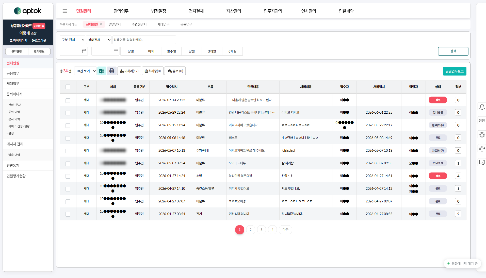
- 2구분·상태·기간으로 원하는 민원을 찾습니다.기간은 당일 어제 일주일 당월 3개월 6개월 버튼으로 빠르게 지정합니다.
- 3일일일지에 올릴 민원을 체크하고 오른쪽 위 일일업무보고를 클릭합니다.일일일지 작성 화면이 열리면서 고른 민원이 이미 들어가 있습니다.
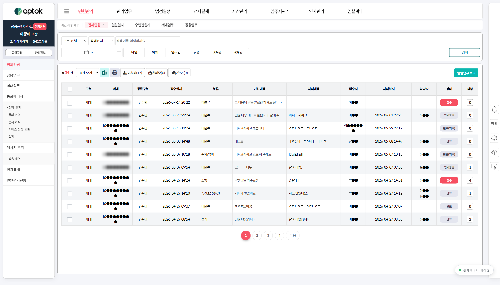
주의
- 체크하지 않고 일일업무보고를 누르면 빈 일지가 열립니다.
- 삭제한 민원은 복구되지 않습니다.
자주 묻는 질문
공용업무와 세대업무를 따로 봐야 하나요?
이 화면에서 함께 볼 수 있습니다. 구분 열로 어느 쪽인지 알 수 있습니다.
오늘 처리한 민원을 일지에 어떻게 넣나요?
체크하고 일일업무보고를 누르면 일일일지 작성 화면으로 그대로 넘어갑니다. 옮겨 적을 필요가 없습니다.
민원관리 > 공용업무
공용업무 — 목록
단지 전체에 해당하는 업무를 접수하고, 누가 언제 처리했는지 남긴다. 세대 한 곳의 일은 세대업무에, 단지 공용부의 일은 여기에 기록한다.
메뉴 이동 안내
2026년 8월 31일부터 이 화면은 관리업무가 아니라 민원관리 아래로 옮겨졌다. 기존 자료는 그대로이며 문서번호와 검색 결과도 동일하다.
기본 조작은 목록 화면 공통 사용법에 정리되어 있습니다. 아래에는 이 화면에만 해당하는 내용만 적었습니다.
표에 보이는 항목
- 접수일시
- 분류
- 업무내용
- 처리내용
- 접수자
- 처리일시
- 담당자
- 상태
- 첨부
이 화면에만 있는 기능
| 공용업무 통계보기 | 접수·처리 건수를 집계해 보여줍니다. |
|---|---|
| 분류 설정 / 특별분류 설정 | 업무를 나누는 기준을 단지 사정에 맞게 직접 만듭니다. 처음 도입할 때 이것부터 정해두면 나중에 통계가 의미 있게 나옵니다. |
| 일일업무보고 | 체크한 민원을 일일일지 작성 화면으로 그대로 넘깁니다. 전자결재 > 일일보고 > 일일일지가 열리면서 고른 민원이 표에 들어가 있습니다. 자세한 방법은 민원을 일일일지로 바로 올리기 문서를 참고하세요. |
따라 하기
- 1상단 민원관리를 클릭한 뒤 왼쪽 목록에서 공용업무를 클릭합니다.
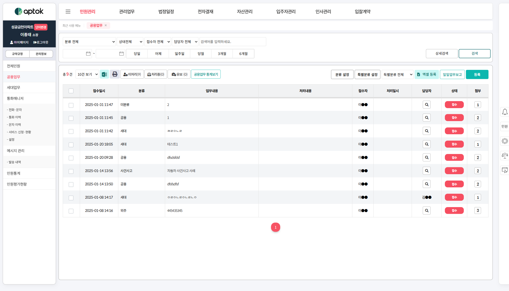
- 2기본으로 최근 접수 건이 위에 오는 목록이 나옵니다.검색·기간·상태 필터 사용법은 목록 화면 공통 사용법을 참고하세요.
자주 묻는 질문
세대업무와 뭐가 다른가요?
단지 공용부에 해당하는 일은 공용업무, 특정 세대의 일은 세대업무에 기록합니다.
관리업무에 있던 공용업무가 안 보입니다.
2026년 8월 31일부터 민원관리 메뉴로 옮겨졌습니다. 상단 메뉴 맨 앞에 있습니다. 자료는 그대로입니다.
분류를 우리 단지에 맞게 바꾸고 싶습니다.
툴바의 분류 설정에서 항목을 직접 추가합니다.
오늘 처리한 업무를 일지에 넣으려면?
목록에서 체크하고 일일업무보고를 누르면 일일일지 작성 화면으로 넘어갑니다. 고른 업무가 이미 들어가 있어 옮겨 적을 필요가 없습니다.
민원관리 > 공용업무 > 등록
공용업무 — 등록 / 처리
업무를 새로 접수하거나, 접수된 업무의 처리 결과를 기록한다.
핵심
이 화면은 한 장이지만 쓰는 시점이 둘이다. ① 접수할 때 — 분류·업무 내용·담당자까지 채운다. ② 처리한 뒤 — 같은 건을 다시 열어 처리일시와 처리내용을 채우고 상태를 바꾼다. 처음 등록할 때 아래쪽 처리 항목을 비워두는 것은 정상이다.
입력 항목
| 분류필수 | 드롭다운 | 미분류 / 공용 / 세대 / 사건사고 / 외주 등. 툴바의 분류 설정에서 항목을 관리합니다. |
|---|---|---|
| 특별분류 | 드롭다운 | 단지에서 따로 집계하고 싶은 기준이 있을 때 사용합니다. |
| 일정 등록 | 토글 | 켜면 이 업무가 관리소 일정과 담당자 일정에 함께 표시됩니다. 날짜가 정해진 업무라면 켜두는 편이 좋습니다. |
| 업무 내용필수 | 여러 줄 입력 | 무슨 일인지 적습니다. |
| 첨부파일 | 파일 | 찾아보기로 파일을 고릅니다. 파일을 더 붙이려면 왼쪽 +, 빼려면 오른쪽 -를 누릅니다. 한 개당 100MB 이하만 올라갑니다. |
| 첨부사진 | 사진 | 오른쪽 위 사진함 버튼으로 사진을 붙입니다. |
| 접수자필수 | 자동 입력 | 로그인한 사람이 자동으로 들어갑니다. 다른 사람 이름으로 남기려면 접수자 변경을 누릅니다. |
| 접수 일시필수 | 날짜 + 시각 | 현재 시각이 자동으로 채워집니다. 나중에 입력하는 경우 실제 접수 시각으로 고쳐 넣습니다. |
| 담당자 | 검색 선택 | 돋보기를 눌러 직원을 찾습니다. 옆의 담당자 알림발송 여부를 켜면 지정한 직원에게 알림이 나갑니다. |
| 상태필수 | 드롭다운 | 접수 / 처리중 / 유보 등. 목록의 상태 필터와 연결됩니다. |
| 처리일시 | 날짜 + 시각 | 처리를 끝낸 뒤 채웁니다. |
| 처리내용 | 여러 줄 입력 | 어떻게 처리했는지 적습니다. 나중에 같은 일이 생겼을 때 참고가 됩니다. |
따라 하기
- 1목록 화면 오른쪽 위 등록을 클릭합니다.
- 2분류를 고르고, 업무 내용을 입력합니다.
- 3필요하면 찾아보기로 파일을 붙입니다.파일 한 개당 100MB 이하만 올릴 수 있습니다.
- 4돋보기를 눌러 담당자를 지정합니다.알림을 보내려면 담당자 알림발송 여부를 켭니다.
- 5날짜가 정해진 업무라면 일정 등록을 켭니다.켜면 관리소 일정과 담당자 일정에 함께 표시됩니다.
- 6오른쪽 위 등록을 클릭해 저장합니다.왼쪽 위 목록을 누르면 저장되지 않고 목록으로 돌아갑니다.
처리 결과 기록하기
- 1목록에서 해당 건을 클릭해 엽니다.mgmt-common-work-form-done-01.png · 아직 없음
- 2처리일시와 처리내용을 채웁니다.
- 3상태를 처리 완료에 맞게 바꾸고 등록으로 저장합니다.상태를 바꿔야 목록의 미처리 건수에서 빠집니다.
주의
- 담당자 알림발송 여부를 켜고 저장하면 실제로 알림이 나갑니다. 연습이나 테스트 중이라면 꺼두세요.
- 왼쪽 위 목록과 오른쪽 위 등록은 이름이 비슷하지만, 목록은 저장하지 않고 나가기입니다.
- 접수 일시는 자동으로 현재 시각이 들어갑니다. 며칠 지난 일을 뒤늦게 입력할 때는 반드시 고쳐 넣으세요. 통계가 어긋납니다.
자주 묻는 질문
등록했는데 담당자에게 알림이 안 갔습니다.
저장하기 전에 담당자 알림발송 여부가 켜져 있었는지 확인합니다. 끈 상태로 저장하면 알림이 나가지 않습니다.
처리내용을 나중에 적어도 되나요?
됩니다. 목록에서 해당 건을 다시 열어 채우면 됩니다.
미처리 건수가 안 줄어듭니다.
처리내용만 적고 상태를 바꾸지 않으면 미처리로 남습니다. 상태를 함께 변경하세요.
민원관리 > 세대업무
세대업무
특정 세대에서 발생한 업무를 접수하고 처리 결과를 남긴다
기본 조작은 목록 화면 공통 사용법에 정리되어 있습니다. 아래에는 이 화면에만 해당하는 내용만 적었습니다.
따라 하기
- 1상단 민원관리를 클릭한 뒤 왼쪽 목록에서 세대업무를 클릭합니다.
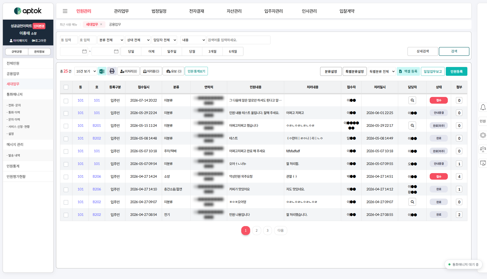
- 2검색·기간·내려받기 등 기본 조작은 목록 화면 공통 사용법을 따릅니다.
민원관리 > 통화매니저 > 전화·문자
전화·문자
걸고 받은 전화와 주고받은 문자를 한 목록에서 본다
핵심
통화와 문자가 한 목록에 섞여 시간순으로 나온다. 누구와 언제 어떤 방식으로 연락했는지 한눈에 보인다. 통화만 보려면 통화 이력, 문자만 보려면 문자 이력으로 간다.
기본 조작은 목록 화면 공통 사용법에 정리되어 있습니다. 아래에는 이 화면에만 해당하는 내용만 적었습니다.
표에 보이는 항목
- 시각
- 구분
- 세대
- 이름
- 연락처
- 내용
- 연락
- 민원
이 화면에만 있는 기능
| 구분 아이콘 | 수화기는 통화, 말풍선은 문자입니다. 화살표 방향으로 발신인지 수신인지 알 수 있고, 못 받은 전화는 부재중으로 표시됩니다. |
|---|---|
| 조회 조건 | 수신·발신, 전화·문자, 민원 여부, 연락처로 좁혀 볼 수 있습니다. |
| 연락 버튼 | 각 줄에 지난 대화 전화 문자 세 버튼이 있습니다. 지난 대화는 그 번호와 주고받은 내용을 대화 형태로 보여줍니다. |
| 민원 등록 | 오른쪽 등록 버튼으로 그 연락을 민원으로 접수합니다. |
| 내용 앞의 대괄호 | 관리비 보안 기타처럼 자동 분류된 꼬리표가 붙습니다. 통화 요약에서 잡은 분류입니다. |
따라 하기
- 1상단 민원관리를 클릭한 뒤 통화매니저에서 전화·문자를 클릭합니다.
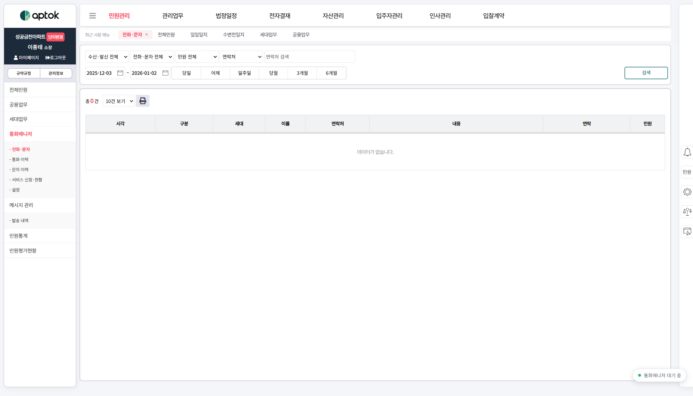
- 2기간과 조건을 정하고 검색을 클릭합니다.기본으로 최근 한 달이 잡혀 있습니다.
- 3지난 내용을 보려면 지난 대화, 연락하려면 전화나 문자를 클릭합니다.
주의
- 등록되지 않은 번호는 세대와 이름이 비어 있습니다. 세대관리에 연락처를 넣으면 표시됩니다.
- 통화 내용은 민감한 정보입니다. 열람 권한을 꼭 필요한 사람에게만 주세요.
자주 묻는 질문
부재중 전화만 보고 싶습니다.
조회 조건에서 걸러 보거나, 알림창의 최근 기록에서 부재중 버튼을 쓰세요.
이 연락을 민원으로 남기려면?
그 줄 오른쪽 등록 버튼을 누르면 민원으로 접수하는 창이 열립니다.
민원관리 > 통화매니저 > 통화 이력
통화 이력
주고받은 통화를 조회하고 녹취와 요약을 확인한다
핵심
알림창의 최근 기록이 최근 것만 보여준다면, 이 화면은 지난 통화 전체를 찾는 곳이다. 통화 하나를 열면 녹취 재생, 대화 전문, 자동 요약을 볼 수 있다.
상세 화면
통화를 열면 상세 화면이 나온다. · 기본 정보 — 일시, 발신·수신, 통화시간, 연락처, 세대, 이름, 민원 등록 여부 · 녹취 — 보관 기한과 다운로드 보관 · 스크립트 — 재생하면서 대화 전문을 읽습니다. 관리사무소와 입주민이 구분됩니다. · 요약 — 분류, 긴급도, 생성일시, 언급된 동·호 · 오른쪽 위 삭제 민원으로 등록 인쇄 · 다시 요약 스크립트 수정으로 다시 만들거나 고칠 수 있습니다.
기본 조작은 목록 화면 공통 사용법에 정리되어 있습니다. 아래에는 이 화면에만 해당하는 내용만 적었습니다.
따라 하기
- 1상단 민원관리를 클릭한 뒤 통화매니저에서 통화 이력을 클릭합니다.
- 2목록에서 통화를 눌러 상세 화면을 엽니다.녹취를 재생하면서 전문을 읽을 수 있습니다.
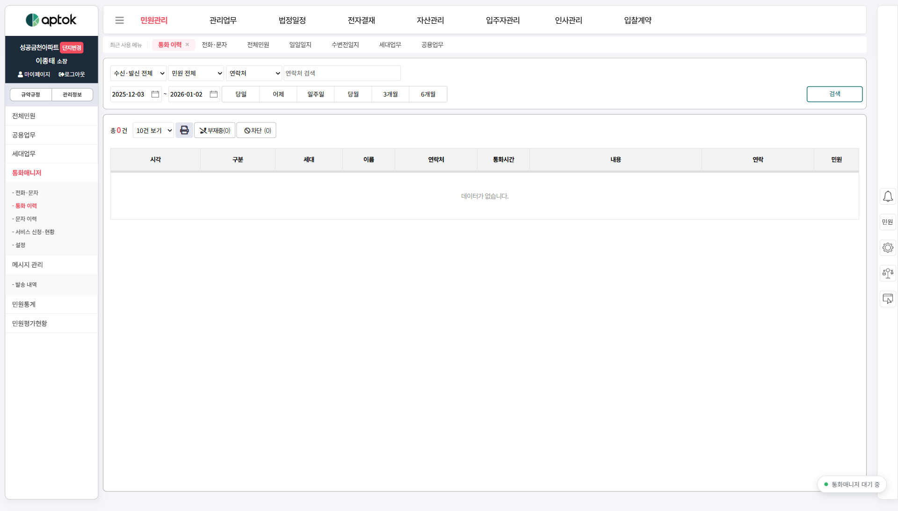
- 3민원으로 남기려면 오른쪽 위 민원으로 등록을 클릭합니다.통화 내용이 이미 민원 형식으로 정리된 창이 열립니다. 세대, 접수일시, 분류, 민원 내용이 자동으로 채워져 있습니다.cs-call-hist-03.png · 아직 없음
- 4세대업무 등록 화면 또는 공용업무 등록 화면을 골라 클릭합니다.특정 세대의 일이면 세대업무, 단지 공용부의 일이면 공용업무입니다. 고른 쪽의 등록 화면으로 넘어가고 내용이 그대로 들어갑니다.
주의
- 녹취에는 보관 기한이 있습니다. 오래 두어야 할 통화는 보관하거나 내려받으세요.
- 요약과 전문은 자동으로 만들어진 것이라 틀릴 수 있습니다. 중요한 건은 녹취를 직접 들어보세요.
- 통화 내용은 민감한 정보입니다. 열람 권한을 꼭 필요한 사람에게만 주세요.
자주 묻는 질문
통화 내용을 문서로 남기고 싶습니다.
상세 화면 오른쪽 위 인쇄를 쓰거나, 민원으로 등록으로 민원에 남기세요.
요약이 틀렸습니다.
다시 요약으로 새로 만들거나 스크립트 수정으로 전문을 고칠 수 있습니다.
민원으로 등록할 때 내용을 다시 적어야 하나요?
아닙니다. 통화 요약이 민원 내용에 그대로 들어갑니다. 세대업무인지 공용업무인지만 고르면 됩니다.
민원관리 > 통화매니저 > 문자 이력
문자 이력
주고받은 문자를 조회한다
핵심
전화·문자에서 문자만 걸러 본 것과 같다. 문자로 오간 내용만 확인할 때 쓴다.
기본 조작은 목록 화면 공통 사용법에 정리되어 있습니다. 아래에는 이 화면에만 해당하는 내용만 적었습니다.
표에 보이는 항목
- 시각
- 구분
- 세대
- 이름
- 연락처
- 내용
- 연락
- 민원
이 화면에만 있는 기능
| 사진 | 위쪽 사진 버튼에 개수가 표시됩니다. 입주민이 사진을 보낸 경우 여기서 모아 볼 수 있습니다. |
|---|---|
| 연락 버튼 | 각 줄에 지난 대화 전화 문자가 있습니다. |
| 민원 등록 | 오른쪽 등록으로 그 문자를 민원으로 접수합니다. |
따라 하기
- 1상단 민원관리를 클릭한 뒤 통화매니저에서 문자 이력을 클릭합니다.
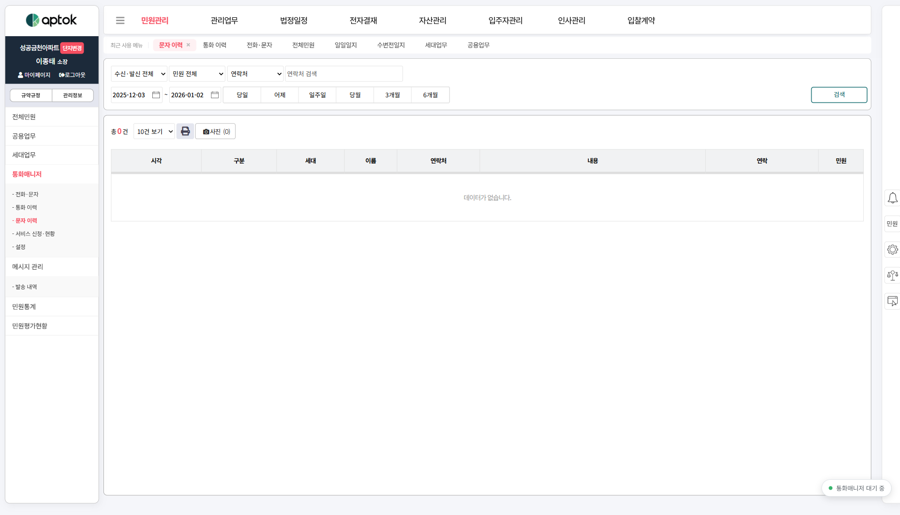
주의
- 문자로 받은 사진도 개인정보입니다. 다룰 때 주의하세요.
자주 묻는 질문
입주민이 보낸 사진은 어디서 보나요?
위쪽 사진 버튼을 누르면 모아 볼 수 있습니다.
민원관리 > 통화매니저 > 서비스 신청·현황
서비스 신청·현황
통화매니저 서비스를 신청하고 이용 현황을 본다
기본 조작은 목록 화면 공통 사용법에 정리되어 있습니다. 아래에는 이 화면에만 해당하는 내용만 적었습니다.
따라 하기
- 1상단 민원관리를 클릭한 뒤 통화매니저에서 서비스 신청·현황을 클릭합니다.
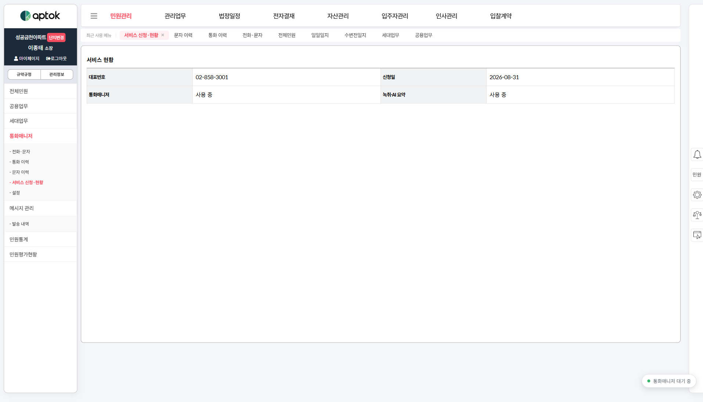
민원관리 > 통화매니저 > 설정
설정
통화매니저의 전화 수신, ARS, 문자 발송, 화면 알림을 설정한다
핵심
통화매니저의 모든 동작이 여기서 정해진다. 탭이 네 개이고 각각 다루는 것이 다르다. 스크린팝만은 이 브라우저에만 적용된다. 다른 컴퓨터에서는 따로 설정해야 한다.
회선 상태
화면 맨 위에 회선 상태가 나온다. 대표번호와 연결 여부, ARS 상품 가입 여부, 현재 통화설정 상태, 조회 시각이 보인다. 통화가 안 걸리거나 이상하면 여기부터 확인한다.
설정 탭 네 개
| 통화설정 | 전화가 왔을 때 어떻게 받을지, 안내멘트를 어떻게 들려줄지 정합니다. |
|---|---|
| ARS 관리 | 자동응답 시나리오와 업무시간을 설정합니다. ARS 상품에 가입해야 씁니다. |
| 땡큐문자 | 통화가 끝난 뒤나 부재중일 때 자동으로 보낼 문자를 정합니다. |
| 스크린팝 | 전화가 오면 화면에 뜨는 알림창의 모양과 내용을 정합니다. |
통화설정 탭
| 기본 통화설정 | 수신 방식을 정상연결 즉시 착신전환 부재중 안내 중에 고릅니다. 무응답이거나 통화중일 때 착신전환할지 각각 정하고, 착신전환번호를 넣습니다. 착신전환을 쓰려면 번호가 반드시 있어야 합니다. |
|---|---|
| 산업안전보건멘트 | 전화받는 사람 보호를 위한 안내멘트를 켜고 끕니다. |
| 인사말 | 회선에 따라 지원하지 않을 수 있습니다. 지원 안 되면 회색으로 표시됩니다. |
| 시간대별 안내멘트 | 시간대를 나눠 다르게 동작시킵니다. 예를 들어 18:00~09:00에는 부재중 멘트가 나가도록 할 수 있습니다. |
| 기간별 안내멘트 | 휴가처럼 특정 기간에만 다른 멘트를 내보낼 때 씁니다. |
| 안내멘트 | 1번부터 5번까지 멘트를 미리 만들어 두고 시간대·기간별 설정에서 골라 씁니다. |
| 통화차단번호 | 특정 번호나 국번을 막습니다. 차단 횟수와 등록자가 기록됩니다. |
ARS 관리 탭
| ARS 사용 | 자동응답을 켜고 끕니다. ARS 상품에 가입한 회선에서만 쓸 수 있습니다. 미가입이면 설정해도 동작하지 않습니다. |
|---|---|
| ARS 시나리오 | 번호를 눌렀을 때 어디로 연결할지 정합니다. |
| 업무시간 | 업무시간과 요일을 정합니다. 공휴일 처리와 점심시간도 따로 설정할 수 있습니다. |
땡큐문자 탭
| 자동 발송 · 발송 제한 | 하루에 같은 번호로 보낼 최대 횟수를 정합니다. |
|---|---|
| 통화 완료 후 | 통화가 끝난 뒤 자동으로 보낼 문구를 정합니다. |
| 부재중일 때 | 전화를 못 받았을 때 자동으로 보낼 문구입니다. |
화면팝 탭
| 적용 범위 | 이 설정은 지금 쓰는 브라우저에만 적용됩니다. |
|---|---|
| 사용 여부 · 알림 · 알림 효과 | 알림창을 띄울지, 소리와 효과를 쓸지 정합니다. 알림 테스트로 확인합니다. |
| 표시 항목 | 민원, 직전 통화, 메모, 문자 내용 중에 무엇을 보여줄지 고릅니다. |
| 글자 크기 · 투명도 · 카드 최대 개수 · 자동 정리 | 보기 편하게 조절하고, 몇 분 뒤 자동으로 치울지 정합니다. |
| 미리보기 | 설정한 대로 어떻게 보이는지 상황별로 보여줍니다. |
기본 조작은 목록 화면 공통 사용법에 정리되어 있습니다. 아래에는 이 화면에만 해당하는 내용만 적었습니다.
따라 하기
- 1상단 민원관리를 클릭한 뒤 통화매니저에서 설정을 클릭합니다.처음 열면 통화설정 탭이 보입니다.
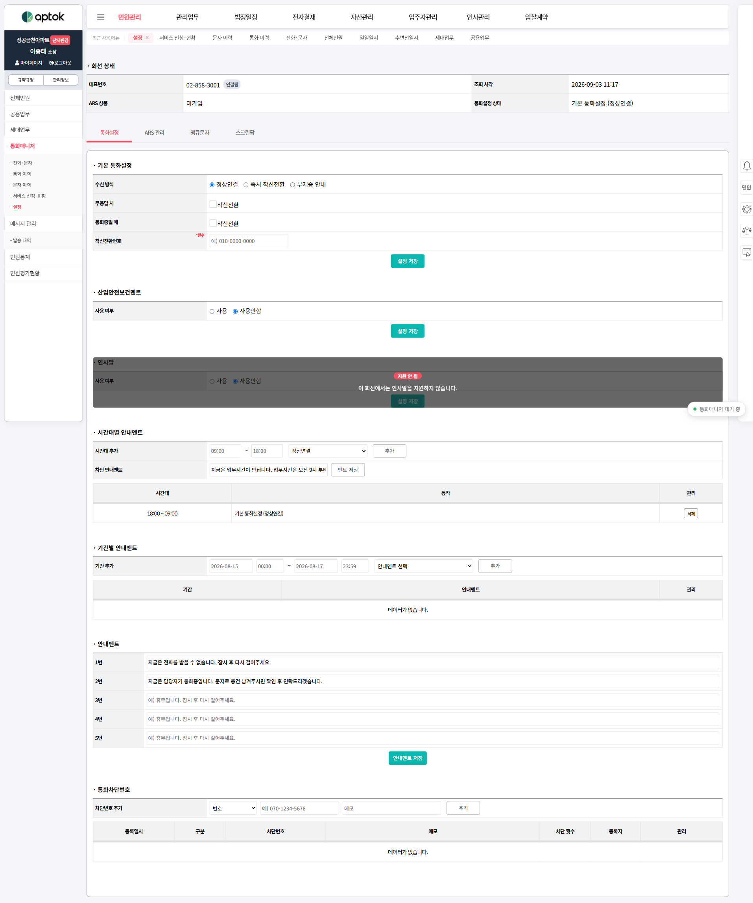
- 2자동응답을 쓰려면 ARS 관리 탭을 클릭합니다.ARS 상품에 가입해야 실제로 동작합니다.

- 3통화 후 자동 문자를 보내려면 땡큐문자 탭을 클릭합니다.통화 완료 후와 부재중일 때를 각각 설정합니다.
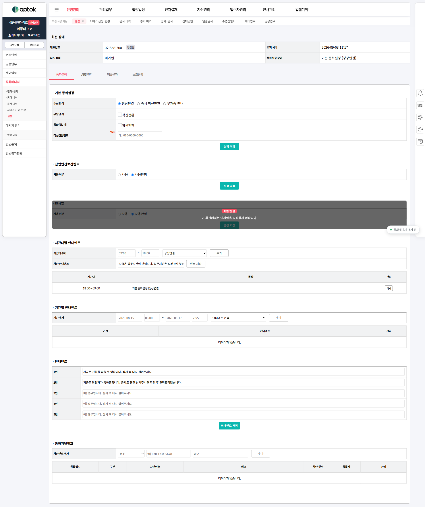
- 4화면 알림창을 조절하려면 스크린팝 탭을 클릭합니다.이 설정은 지금 쓰는 브라우저에만 적용됩니다.cs-setting-04.png · 아직 없음
주의
- 스크린팝 설정은 브라우저마다 따로입니다. 컴퓨터를 바꾸면 다시 설정해야 합니다.
- ARS는 상품에 가입해야 동작합니다. 미가입 상태에서 설정만 해두면 아무 일도 일어나지 않습니다.
- 착신전환을 켰는데 번호를 안 넣으면 전화가 어디로도 가지 않습니다.
- 땡큐문자는 실제로 발송됩니다. 문구를 확인하고 켜세요.
자주 묻는 질문
전화가 안 걸립니다.
화면 맨 위 회선 상태에서 대표번호가 연결됨인지, 통화설정 상태가 무엇인지 확인하세요.
다른 컴퓨터에서는 알림창이 안 뜹니다.
스크린팝은 브라우저마다 따로 설정합니다. 그 컴퓨터에서 다시 켜 주세요.
퇴근 후에는 전화를 안 받고 싶습니다.
통화설정 탭의 시간대별 안내멘트에서 시간대를 추가하고 부재중 멘트를 지정하세요.
ARS 설정이 안 먹습니다.
ARS 상품 가입 여부를 확인하세요. 회선 상태에 미가입으로 나오면 동작하지 않습니다.
민원관리 > 메시지 관리 > 발송 내역
발송 내역
입주민에게 보낸 메시지가 실제로 갔는지 확인한다
핵심
보낸 문자가 성공했는지 실패했는지 확인하는 화면이다. 통화매니저가 자동으로 보낸 땡큐문자도 여기에 남는다. 보냈다고 생각했는데 안 간 경우를 여기서 잡는다.
기본 조작은 목록 화면 공통 사용법에 정리되어 있습니다. 아래에는 이 화면에만 해당하는 내용만 적었습니다.
표에 보이는 항목
- 시각
- 구분
- 채널
- 세대
- 이름
- 연락처
- 발신번호
- 내용
- 상태
이 화면에만 있는 기능
| 실패 버튼 | 위쪽 실패 버튼에 실패 건수가 표시됩니다. 0이 아니면 안 간 문자가 있다는 뜻이므로 확인해야 합니다. |
|---|---|
| 구분 | 통화매니저가 자동으로 보낸 것인지, 직접 보낸 것인지 표시됩니다. |
| 발신번호 | 어느 번호로 나갔는지 보입니다. 보통 단지 대표번호입니다. |
| 상태 | 성공 또는 실패로 표시됩니다. |
따라 하기
- 1상단 민원관리를 클릭한 뒤 메시지 관리에서 발송 내역을 클릭합니다.
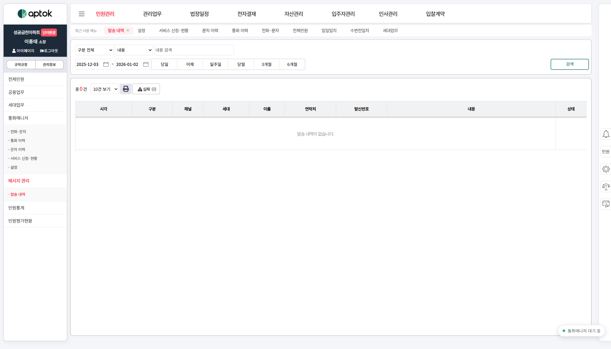
- 2위쪽 실패 건수를 확인합니다.0이 아니면 안 간 문자가 있습니다.
주의
- 실패 건수가 있으면 그 입주민은 안내를 못 받은 것입니다. 다시 보내거나 전화로 알리세요.
자주 묻는 질문
문자를 보냈는데 안 갔다고 합니다.
이 화면에서 그 건의 상태를 확인하세요. 실패로 나오면 다시 보내야 합니다.
민원관리 > 설문 관리
설문 관리
입주민에게 설문이나 투표를 돌리고 응답을 모아 본다
핵심
종이로 돌리던 만족도 조사나 찬반 투표를 앱으로 대신하는 화면이다. 관리사무소가 문항을 만들어 올리면 입주민이 앱에서 답하고, 결과가 이 화면에 실시간으로 쌓인다. 설문 하나가 목록의 한 줄이고, 줄을 누르면 지금까지의 응답 집계를 바로 볼 수 있다. 설문과 투표는 같은 화면에서 만들며, 등록할 때 설문유형으로 구분한다.
기본 조작은 목록 화면 공통 사용법에 정리되어 있습니다. 아래에는 이 화면에만 해당하는 내용만 적었습니다.
표에 보이는 항목
- 번호
- 분야
- 제목
- 응답단위
- 시작일
- 종료일
- 참여현황
- 작성자
- 기안일시
- 결재현황
- 진행상태
이 화면에만 있는 기능
| 진행상태 | 예정 진행중 종료로 나뉩니다. 시작일이 아직 안 온 것이 예정, 기간 안이면 진행중, 종료일이 지났으면 종료입니다. 목록 맨 오른쪽에 색깔 표시로 나옵니다. |
|---|---|
| 응답단위 | 입주민별과 세대당 두 가지입니다. 입주민별은 사람 한 명이 한 번, 세대당은 한 세대가 한 번만 답합니다. 만족도 조사는 보통 입주민별, 동의 여부를 묻는 투표는 세대당으로 씁니다. |
| 참여현황 | "1 / 12 (8.3%)"처럼 나옵니다. 답한 수 / 대상 수 (참여율)입니다. 참여율이 낮으면 참여자 알림발송으로 독려할 수 있습니다. |
| 분야 | 설문을 묶는 꼬리표입니다. 처음에는 아무것도 없어서 -로 표시됩니다. 분야설정에서 먼저 만들어야 등록할 때 고를 수 있습니다. |
| 결재현황 | 결재선을 걸고 올린 설문만 표시됩니다. 결재 없이 바로 올린 설문은 비어 있습니다. |
| 조회 조건 | 진행상태·응답단위·분야로 좁히고, 설문 제목으로도 찾습니다. 날짜는 시작일 종료일 등록일 중에 무엇을 기준으로 볼지 먼저 고릅니다. |
| 분야설정 | 오른쪽 위 버튼입니다. 설문을 묶을 분야 이름을 만들고 지웁니다. |
| 설문 등록 | 오른쪽 위 초록색 버튼입니다. 새 설문 만들기 화면으로 넘어갑니다. |
따라 하기
- 1상단 민원관리를 클릭한 뒤 왼쪽에서 설문 관리를 클릭합니다.메시지 관리 아래, 민원통계 위에 있습니다.
- 2진행상태·응답단위·기간을 정하고 검색을 클릭합니다.진행 중인 설문만 보려면 진행상태에서 진행중을 고릅니다.
- 3결과를 보려면 목록에서 설문 제목을 클릭합니다.상세 화면에서 문항별 응답 집계를 봅니다.
- 4새 설문을 만들려면 오른쪽 위 설문 등록을 클릭합니다.
주의
- 분야를 쓰려면 분야설정에서 먼저 만들어야 합니다. 만들지 않으면 등록할 때 미분류밖에 고를 수 없습니다.
- 응답단위는 등록할 때 정합니다. 시작한 뒤에는 바꾸지 마세요. 이미 받은 응답과 계산 기준이 어긋납니다.
자주 묻는 질문
설문과 투표는 무엇이 다른가요?
만드는 화면은 같고, 등록할 때 설문유형에서 고릅니다. 여러 문항을 물어보면 설문, 한 가지를 찬반으로 묻는 자리면 투표로 쓰면 됩니다.
참여율이 너무 낮습니다.
상세 화면 오른쪽 위 참여자 알림발송을 누르면 아직 안 한 사람에게 알림이 갑니다.
분야가 -로만 나옵니다.
분야를 하나도 만들지 않아서입니다. 분야설정에서 추가하세요.
민원관리 > 설문 관리 > 설문 등록
설문 등록
설문이나 투표의 문항을 만들고 대상과 기간을 정해 올린다
핵심
화면이 위아래 두 덩어리다. 위쪽은 설문의 조건(결재, 분야, 제목, 기간, 응답 단위, 공개 정책, 발송 채널)이고, 아래쪽 문항 구성은 실제로 물어볼 내용이다. 위를 채우고 아래에 질문을 하나씩 붙인 뒤 오른쪽 위 등록을 누르면 입주민에게 나갑니다.
위쪽 입력 항목
| 결재여부 | 결재를 받고 내보낼 설문이면 결재선을 고릅니다. 결재선 사용안함을 고르면 결재 없이 바로 올라갑니다. 결재자를 직접 짜려면 결재자 지정을 씁니다. |
|---|---|
| 분야 | 목록에서 설문을 묶는 꼬리표입니다. 목록 화면의 분야설정에서 만들어 둔 것만 나옵니다. 없으면 미분류입니다. |
| 설문유형 | 설문과 투표 중에 고릅니다. |
| 제목 | 입주민 앱에 그대로 보이는 이름입니다. 기간이 드러나게 적으면 나중에 찾기 쉽습니다. |
| 시작일 · 종료일 | 시작일이 되면 자동으로 시작합니다. 종료일을 비워 두면 기간이 "수동 종료"로 표시되고, 직접 종료를 눌러야 끝납니다. |
| 응답 단위 | 입주민별(개인별 응답)과 세대당 1응답 중에 고릅니다. 고르는 순간 오른쪽 대상 인원/세대수가 자동으로 채워집니다. |
| 익명 여부 | 체크하면 동·호수와 답변자 이름이 결과에 표시되지 않습니다. 민감한 내용을 물을 때 켭니다. |
| 결과 공개 정책 | 입주민에게 결과를 언제 보여줄지 정합니다. 진행 중 결과 공개 · 진행 중 참여수만 · 종료 후 공개 세 가지입니다. 투표는 보통 진행 중 참여수만이나 종료 후 공개로 둡니다. |
| 발송 채널 | 선택안함과 앱 푸시 중에 고릅니다. 앱 푸시를 고르면 등록과 동시에 알림이 나갑니다. |
| 참고 첨부파일 · 첨부사진 | 설문을 이해하는 데 필요한 자료를 붙입니다. 파일 하나에 100MB까지입니다. |
| 본문 입력 | + 본문 입력을 누르면 설문 취지를 적는 칸이 펼쳐집니다. 안 써도 됩니다. |
질문 만들기
| 새 질문 추가 | 아래쪽 +새 질문 추가를 누를 때마다 질문 카드가 하나씩 늘어납니다. 위에 총 N개 문항으로 개수가 나옵니다. |
|---|---|
| 문항 유형 | 카드마다 주관식 단일선택 다중선택 중에 고릅니다. 선택형을 고르면 보기 입력칸이 나오고, 보기 추가로 항목을 늘립니다. |
| 필수 항목 | 체크하면 답하지 않고는 설문을 제출할 수 없습니다. |
| 개인정보 | 답변에 개인정보가 들어가는 문항에 체크합니다. 주관식으로 연락처나 이름을 받을 때 씁니다. |
| 순서 바꾸기 | 카드 왼쪽 점 여섯 개(⠿)를 끌어 문항과 보기의 순서를 바꿉니다. |
| 참고 정보 추가 | 질문이 아니라 읽어보라고 끼워 넣는 자료입니다. 참고 이미지(JPG·PNG·GIF·WEBP)와 참고 파일 두 가지가 있습니다. 도면이나 견적서를 보여주고 의견을 묻는 투표에 씁니다. |
화면 아래 버튼
| 목록 | 저장하지 않고 나갑니다. 확인 창이 뜨고, 확인을 누르면 쓰던 내용이 사라집니다. |
|---|---|
| 사진함 | 단지 사진함에 있는 사진을 골라 붙입니다. |
| 임시저장 | 아직 내보내지 않고 저장만 합니다. 문항을 나눠서 만들 때 씁니다. |
| 등록 | 실제로 올라갑니다. 결재선을 걸었으면 결재가 올라가고, 안 걸었으면 바로 입주민에게 공개됩니다. 발송 채널을 앱 푸시로 두었으면 이때 알림도 나갑니다. |
따라 하기
- 1설문 관리 목록에서 오른쪽 위 설문 등록을 클릭합니다.
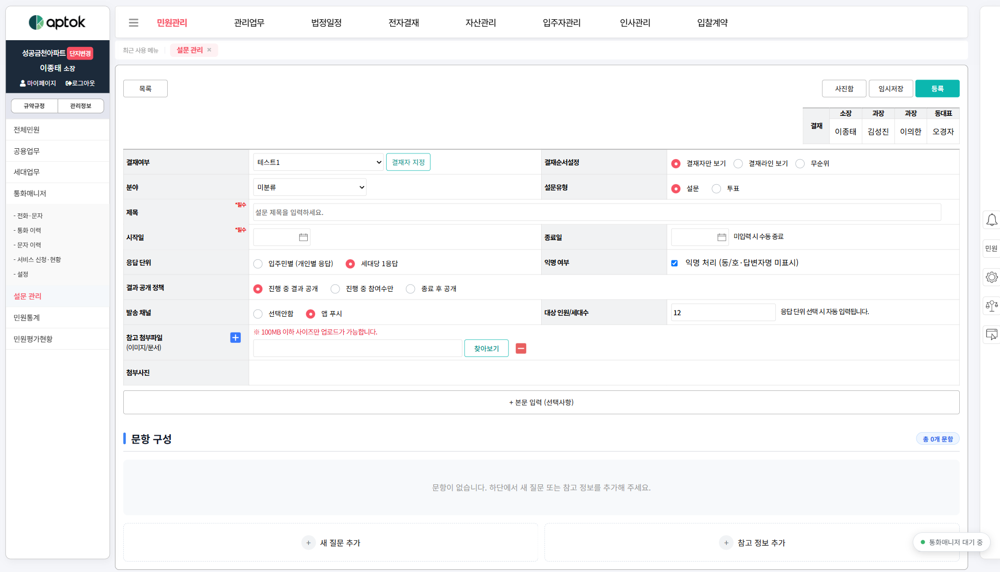
- 2결재여부·분야·설문유형·제목을 채웁니다.결재 없이 바로 낼 설문이면 결재선 사용안함으로 둡니다.
- 3시작일과 종료일을 넣고 응답 단위를 고릅니다.응답 단위를 고르면 대상 인원·세대수가 자동으로 채워집니다.
- 4익명 여부, 결과 공개 정책, 발송 채널을 정합니다.앱 푸시를 고르면 등록과 동시에 입주민에게 알림이 갑니다.cs-survey-form-02.png · 아직 없음
- 5아래 문항 구성에서 +새 질문 추가를 클릭하고 질문을 적습니다.주관식 단일선택 다중선택 중에 고릅니다. 선택형이면 보기 추가로 항목을 늘립니다.
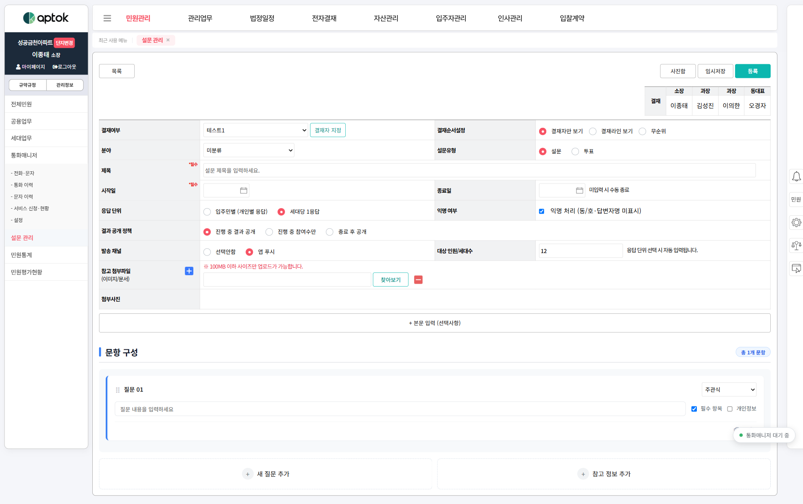
- 6꼭 답해야 하는 문항은 필수 항목에 체크합니다.개인정보를 받는 문항이면 개인정보에도 체크합니다.
- 7도면이나 안내문을 보여주려면 +참고 정보 추가를 클릭합니다.질문이 아니라 읽을거리로 들어갑니다.
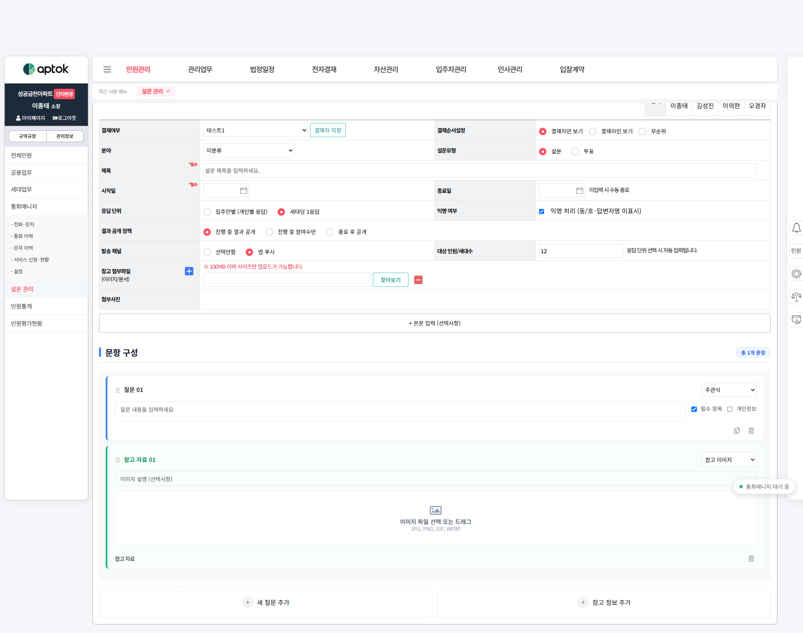
- 8다 되었으면 오른쪽 위 등록을 클릭합니다.나중에 이어서 만들 것이면 임시저장을 누릅니다.
주의
- 등록을 누르면 실제로 입주민에게 나갑니다. 연습으로 누르지 마세요.
- 발송 채널을 앱 푸시로 두면 등록하는 순간 알림이 갑니다. 밤늦게 등록하지 마세요.
- 종료일을 비워 두면 기간이 "수동 종료"로 표시되고 자동으로 끝나지 않습니다. 상세 화면에서 직접 종료를 눌러야 합니다.
- 저장하지 않고 목록을 누르면 만들던 문항이 모두 사라집니다.
- 익명 여부는 등록 뒤에 바꾸지 마세요. 익명으로 답한 사람의 신뢰를 깨는 일입니다.
- 개인정보를 받는 문항은 꼭 필요한 것만 넣고 개인정보에 체크하세요.
자주 묻는 질문
분야에 미분류밖에 없습니다.
목록 화면 오른쪽 위 분야설정에서 분야를 먼저 만들어야 합니다.
만들다 말고 나중에 이어서 하고 싶습니다.
임시저장을 누르세요. 목록에 남아 있어 다시 열어 이어서 만들 수 있습니다.
대상이 몇 명인지 미리 알고 싶습니다.
응답 단위를 고르면 오른쪽 대상 인원/세대수에 자동으로 나옵니다.
도면을 보여주고 의견을 받고 싶습니다.
+참고 정보 추가로 참고 이미지를 넣고, 그 아래에 질문을 붙이세요.
결재를 받아야 하는 설문입니다.
위쪽 결재여부에서 결재선을 고르거나 결재자 지정으로 직접 짜세요.
민원관리 > 설문 관리 > (설문 클릭)
설문 상세·결과
설문의 진행 상황과 문항별 응답을 확인하고 기간을 조절한다
핵심
설문이 지금 어디까지 왔는지와 무엇이라고 답했는지를 한 화면에서 본다. 위쪽은 설문의 조건과 남은 기간, 가운데는 참여율, 아래는 문항별 집계다. 종료를 기다리지 않고 진행 중에도 결과를 볼 수 있다.
이 화면에만 있는 기능
| 참여자 알림발송 | 오른쪽 위 버튼입니다. 아직 답하지 않은 사람에게 다시 알림을 보냅니다. 참여율이 낮을 때 씁니다. |
|---|---|
| 연장 | 종료일을 뒤로 미룹니다. 참여율이 낮은 채로 종료일이 다가올 때 씁니다. |
| 종료 | 종료일 전에 설문을 끝냅니다. 종료일을 비워 두고 시작한 설문은 이 버튼으로만 끝낼 수 있습니다. |
| 주관식 답변 표시 | 답변 아래에 동·호수와 이름, 답한 시각이 붙습니다. 등록할 때 익명 처리를 켠 설문은 이 부분이 표시되지 않습니다. |
| 활용하기 | 이 설문을 그대로 복제해 새 등록 화면을 엽니다. 문항과 참고 자료까지 그대로 들어오므로, 분기마다 같은 설문을 돌릴 때 제목과 기간만 고치면 됩니다. |
| 수정 · 삭제 | 오른쪽 위에 있습니다. 이미 응답이 쌓인 설문을 고치면 결과 해석이 어긋날 수 있으니 신중하게 씁니다. |
| 엑셀 내려받기 | 오른쪽 위 활용하기 옆에 있는 초록색 엑셀 아이콘입니다. 세대별 답변 결과를 엑셀 파일로 내려받습니다. 결과를 따로 정리하거나 보관할 때 씁니다. |
| 인쇄 | 맨 오른쪽 프린터 아이콘입니다. 지금 보고 있는 결과를 그대로 출력합니다. |
따라 하기
- 1설문 관리 목록에서 볼 설문의 제목을 클릭합니다.
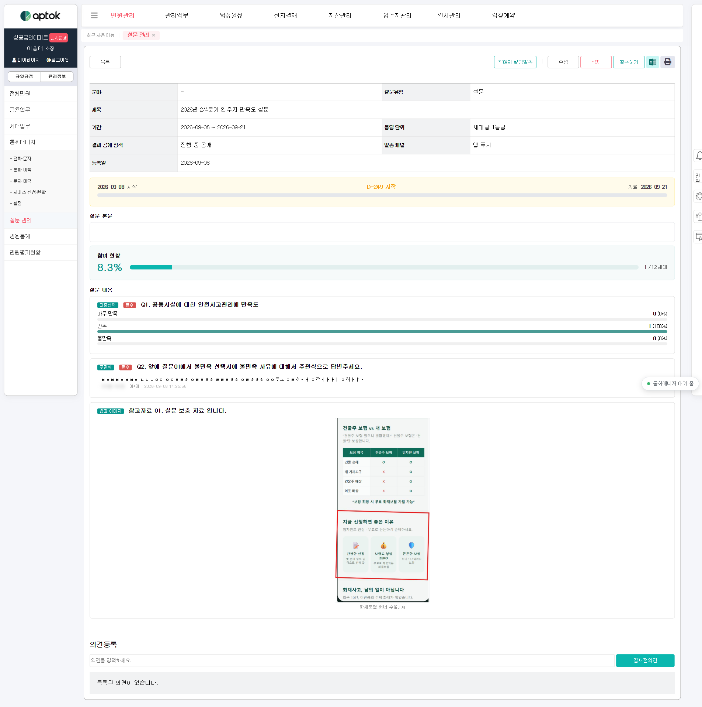
- 2가운데 참여 현황에서 참여율을 확인합니다.낮으면 오른쪽 위 참여자 알림발송을 누릅니다.
- 3아래로 내려 문항별 응답을 확인합니다.선택형은 보기별 건수와 비율, 주관식은 답변 전체가 나옵니다.
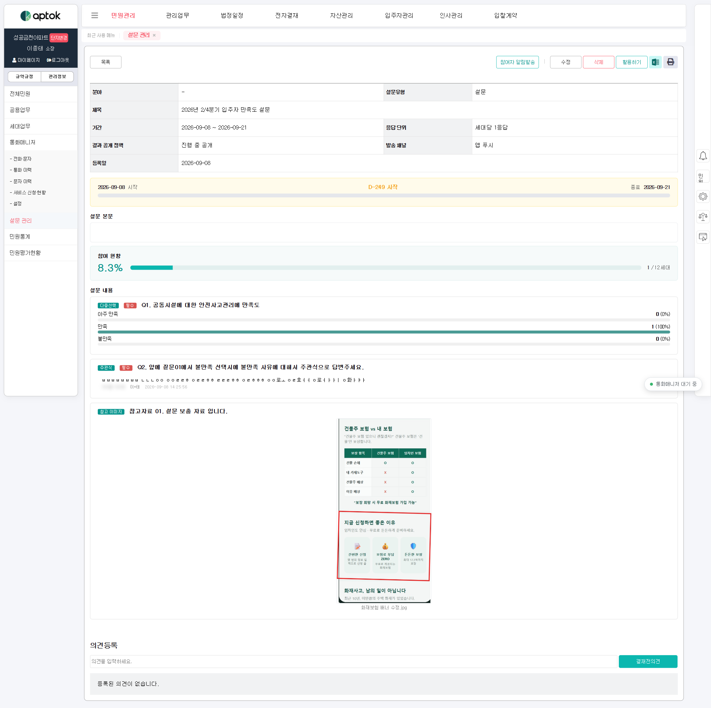
- 4기간을 늘리려면 연장, 지금 끝내려면 종료를 클릭합니다.종료한 설문은 다시 진행 상태로 돌릴 수 없습니다.
- 5같은 설문을 다시 돌리려면 오른쪽 위 활용하기를 클릭합니다.문항이 그대로 복제된 등록 화면이 열립니다. 제목과 기간만 고치면 됩니다.cs-survey-detail-03.png · 아직 없음
주의
- 참여자 알림발송은 실제로 입주민에게 알림이 갑니다. 확인용으로 누르지 마세요.
- 종료를 누르면 더 이상 응답을 받지 않습니다. 되돌릴 수 없습니다.
- 응답이 이미 쌓인 설문을 수정하면 앞뒤 결과의 기준이 달라집니다.
- 삭제하면 모아 둔 응답도 함께 사라집니다. 필요한 결과는 먼저 갈무리하세요.
- 익명 설문이라도 주관식 답변에는 답한 사람을 알 만한 내용이 적혀 있을 수 있습니다. 공유할 때 조심하세요.
자주 묻는 질문
종료일을 안 넣고 시작했습니다. 어떻게 끝내나요?
상세 화면 참여 현황 오른쪽의 종료를 누르면 끝납니다.
참여율이 낮아 기간을 더 주고 싶습니다.
연장으로 종료일을 미루고, 참여자 알림발송으로 안 한 사람에게 알립니다.
지난 분기와 똑같은 설문을 또 돌려야 합니다.
활용하기를 누르세요. 문항이 그대로 복제되어 제목과 기간만 고치면 됩니다.
답한 사람이 누구인지 안 보입니다.
등록할 때 익명 처리를 켠 설문입니다. 정상입니다.
결과를 엑셀로 받고 싶습니다.
상세 화면 오른쪽 위 활용하기 옆의 초록색 엑셀 아이콘을 누르면 세대별 답변 결과가 엑셀 파일로 내려받아집니다.
민원관리 > 민원통계
민원통계
민원 접수와 처리 현황을 집계해 본다
준비 중인 기능
2026년 9월 현재 준비 중인 기능이다. 화면을 열면 "준비 중입니다"만 나온다. 통계가 필요하면 민원평가현황이나 각 목록 화면의 엑셀 내려받기를 쓴다.
기본 조작은 목록 화면 공통 사용법에 정리되어 있습니다. 아래에는 이 화면에만 해당하는 내용만 적었습니다.
따라 하기
- 1상단 민원관리를 클릭한 뒤 민원통계를 클릭합니다.아직 준비 중인 화면입니다.
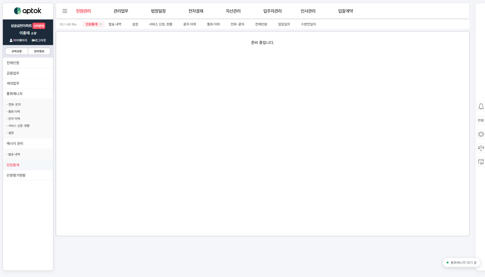
주의
- 아직 제공되지 않는 기능입니다. 열어도 내용이 없습니다.
자주 묻는 질문
민원통계에 아무것도 안 나옵니다.
아직 준비 중인 기능입니다. 정상입니다.
민원관리 > 민원평가현황
민원평가현황
입주민이 매긴 민원 처리 평가를 담당자별로 본다
핵심
민원을 처리한 뒤 입주민이 매긴 평점을 모아 보는 화면이다. 담당자별로 순위가 매겨지고 양호와 개선 필요로 상태가 표시된다. 관리사무소의 응대 품질을 숫자로 확인하는 곳이다.
위쪽 요약
| 평가 민원 수 | 평가가 매겨진 민원 건수입니다. |
|---|---|
| 전체 평균 평점 | 5점 만점 기준 평균입니다. |
| 평가 대상 담당자 | 평가를 받은 사람 수입니다. |
| 낮은 평가 (1~2점) | 낮은 점수를 받은 건수입니다. 0이 아니면 어떤 민원이었는지 확인해 볼 필요가 있습니다. |
기본 조작은 목록 화면 공통 사용법에 정리되어 있습니다. 아래에는 이 화면에만 해당하는 내용만 적었습니다.
이 화면에만 있는 기능
| 담당자별 순위 / 변경 이력 탭 | 순위를 보는 탭과 평가가 바뀐 이력을 보는 탭으로 나뉩니다. |
|---|---|
| 평점 분포 | 5점부터 1점까지 몇 건씩인지 막대로 보여줍니다. |
| 상태 | 양호와 개선 필요로 표시됩니다. 평균 평점에 따라 자동으로 매겨집니다. |
| 담당자 상세 평가 | 왼쪽에서 담당자를 클릭하면 오른쪽에 그 사람의 상세 평가가 나옵니다. |
| 공동 처리 안내 | 화면 아래에 안내가 있습니다. 담당자 둘이 함께 처리한 민원은 두 사람 모두에게 같은 평점이 집계되므로, 담당자별 평가건수를 합치면 전체 평가건수보다 많을 수 있습니다. |
따라 하기
- 1상단 민원관리를 클릭한 뒤 민원평가현황을 클릭합니다.
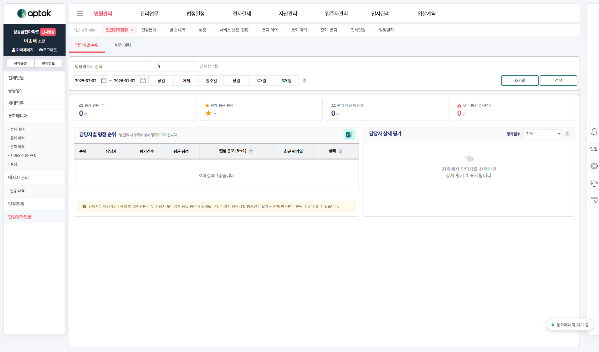
- 2기간을 정하고 검색을 클릭합니다.기본으로 최근 6개월이 잡혀 있습니다.
- 3담당자를 클릭하면 오른쪽에 상세 평가가 나옵니다.
주의
- 담당자 둘이 함께 처리한 민원은 두 사람 모두에게 집계됩니다. 합계가 전체와 다를 수 있습니다.
- 평가는 사람에 대한 것입니다. 순위를 다룰 때 신중하게 쓰세요.
자주 묻는 질문
담당자별 건수를 더하면 전체보다 많습니다.
둘이 함께 처리한 민원이 두 사람 모두에게 집계되기 때문입니다. 정상입니다.
낮은 평가를 받은 민원을 찾고 싶습니다.
담당자를 클릭하면 오른쪽에 상세 평가가 나옵니다.
관리업무 > 사진함
사진함
업무 사진을 모아 보관하고 찾아본다
기본 조작은 목록 화면 공통 사용법에 정리되어 있습니다. 아래에는 이 화면에만 해당하는 내용만 적었습니다.
따라 하기
- 1상단 관리업무를 클릭한 뒤 왼쪽 목록에서 사진함를 클릭합니다.
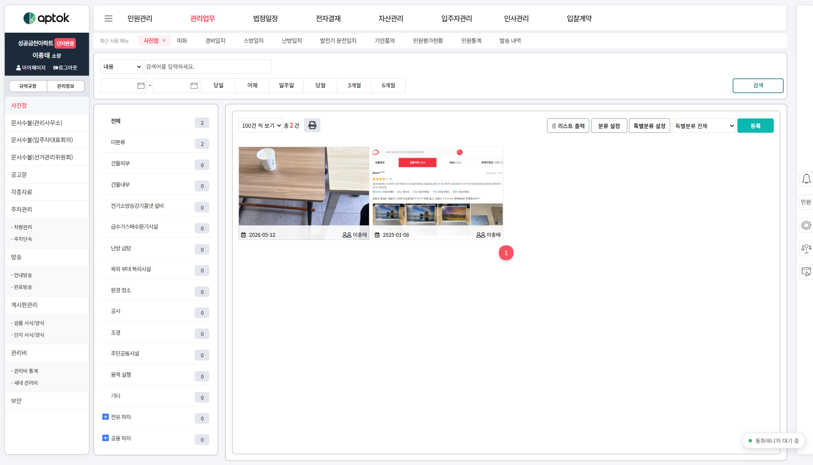
- 2검색·기간·내려받기 등 기본 조작은 목록 화면 공통 사용법을 따릅니다.
관리업무 > 문서수불(관리사무소)
문서수불(관리사무소)
관리사무소가 주고받은 문서를 기록한다
기본 조작은 목록 화면 공통 사용법에 정리되어 있습니다. 아래에는 이 화면에만 해당하는 내용만 적었습니다.
따라 하기
- 1상단 관리업무를 클릭한 뒤 왼쪽 목록에서 문서수불(관리사무소)를 클릭합니다.
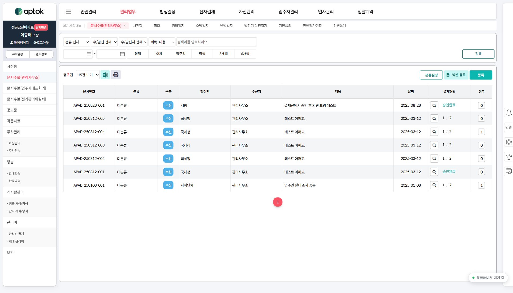
- 2검색·기간·내려받기 등 기본 조작은 목록 화면 공통 사용법을 따릅니다.
관리업무 > 문서수불(입주자대표회의)
문서수불(입주자대표회의)
입주자대표회의가 주고받은 문서를 기록한다
기본 조작은 목록 화면 공통 사용법에 정리되어 있습니다. 아래에는 이 화면에만 해당하는 내용만 적었습니다.
따라 하기
- 1상단 관리업무를 클릭한 뒤 왼쪽 목록에서 문서수불(입주자대표회의)를 클릭합니다.
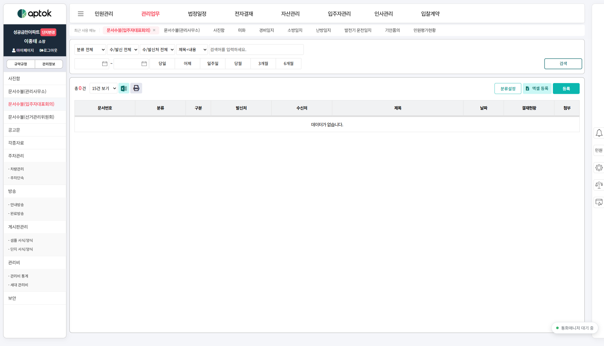
- 2검색·기간·내려받기 등 기본 조작은 목록 화면 공통 사용법을 따릅니다.
관리업무 > 문서수불(선거관리위원회)
문서수불(선거관리위원회)
선거관리위원회가 주고받은 문서를 기록한다
기본 조작은 목록 화면 공통 사용법에 정리되어 있습니다. 아래에는 이 화면에만 해당하는 내용만 적었습니다.
따라 하기
- 1상단 관리업무를 클릭한 뒤 왼쪽 목록에서 문서수불(선거관리위원회)를 클릭합니다.
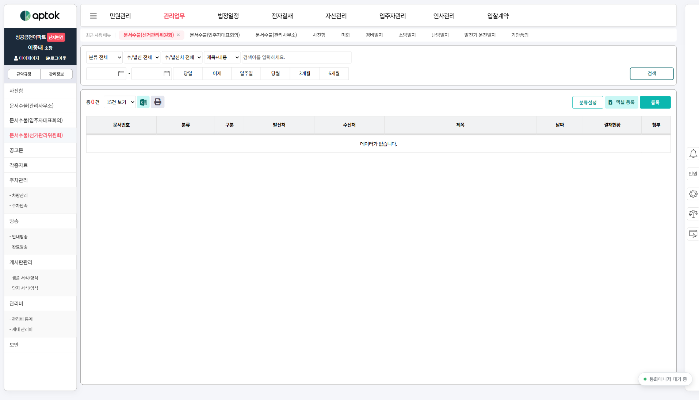
- 2검색·기간·내려받기 등 기본 조작은 목록 화면 공통 사용법을 따릅니다.
관리업무 > 공고문
공고문
단지에 게시할 공고문을 작성하고 관리한다
기본 조작은 목록 화면 공통 사용법에 정리되어 있습니다. 아래에는 이 화면에만 해당하는 내용만 적었습니다.
따라 하기
- 1상단 관리업무를 클릭한 뒤 왼쪽 목록에서 공고문를 클릭합니다.
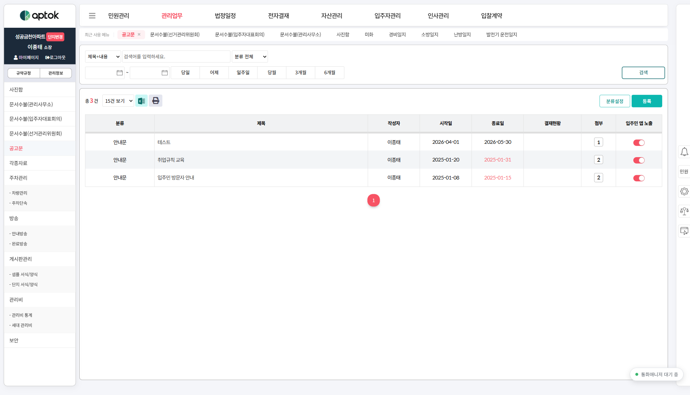
- 2검색·기간·내려받기 등 기본 조작은 목록 화면 공통 사용법을 따릅니다.
관리업무 > 각종자료
각종자료
업무에 쓰는 자료를 보관한다
기본 조작은 목록 화면 공통 사용법에 정리되어 있습니다. 아래에는 이 화면에만 해당하는 내용만 적었습니다.
따라 하기
- 1상단 관리업무를 클릭한 뒤 왼쪽 목록에서 각종자료를 클릭합니다.
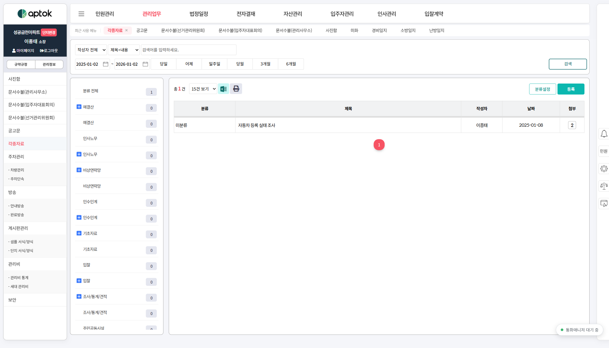
- 2검색·기간·내려받기 등 기본 조작은 목록 화면 공통 사용법을 따릅니다.
관리업무 > 주차관리 > 차량관리
차량관리
단지에 등록된 차량을 관리한다
기본 조작은 목록 화면 공통 사용법에 정리되어 있습니다. 아래에는 이 화면에만 해당하는 내용만 적었습니다.
따라 하기
- 1상단 관리업무를 클릭한 뒤 왼쪽 목록에서 주차관리를 클릭하고 차량관리를 클릭합니다.
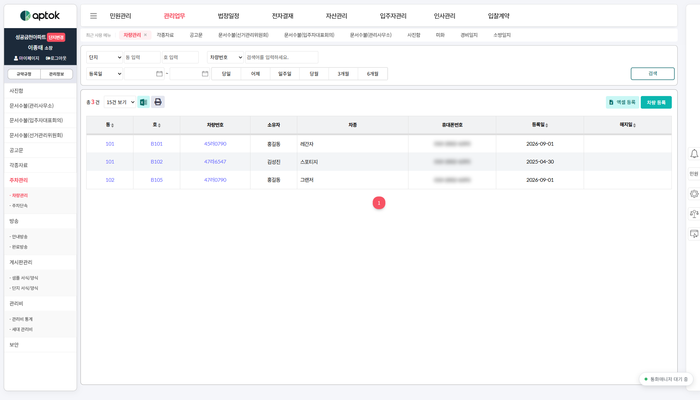
- 2검색·기간·내려받기 등 기본 조작은 목록 화면 공통 사용법을 따릅니다.
관리업무 > 주차관리 > 주차단속
주차단속
주차 위반 단속 내역을 기록한다
기본 조작은 목록 화면 공통 사용법에 정리되어 있습니다. 아래에는 이 화면에만 해당하는 내용만 적었습니다.
따라 하기
- 1상단 관리업무를 클릭한 뒤 왼쪽 목록에서 주차관리를 클릭하고 주차단속를 클릭합니다.
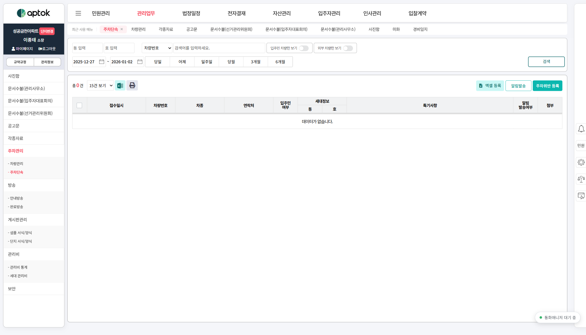
- 2검색·기간·내려받기 등 기본 조작은 목록 화면 공통 사용법을 따릅니다.
관리업무 > 방송 > 안내방송
안내방송
따라 하기
- 1상단 관리업무를 클릭한 뒤 왼쪽 목록에서 방송를 클릭하고 안내방송를 클릭합니다.
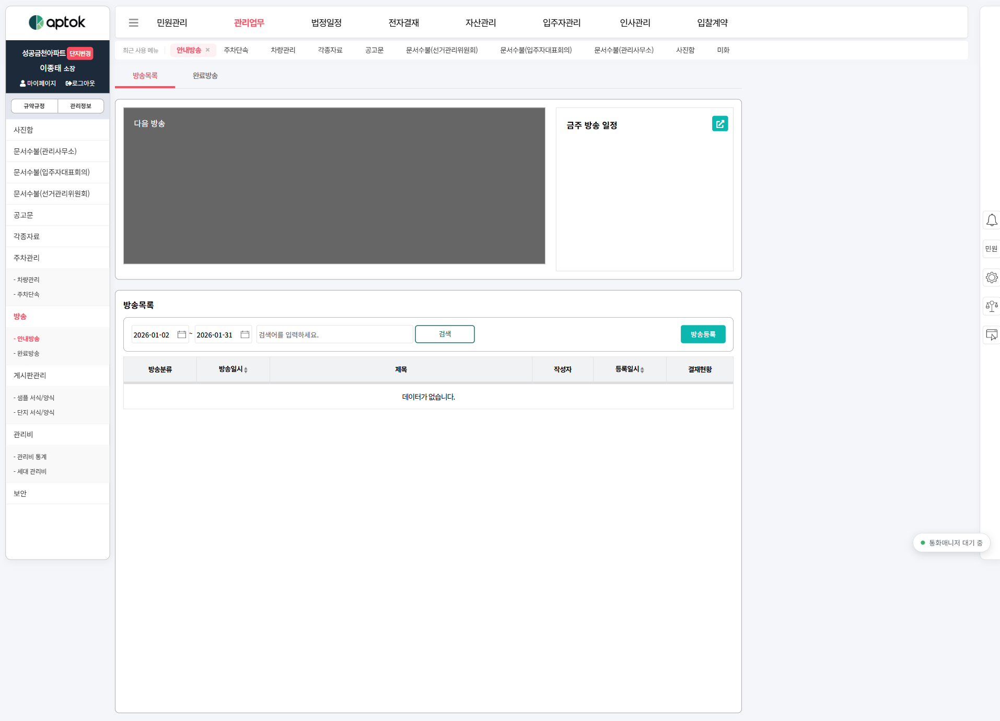
주의
- 실제로 실행되는 동작입니다. 연습 삼아 누르지 마세요.
관리업무 > 방송 > 완료방송
완료방송
따라 하기
- 1상단 관리업무를 클릭한 뒤 왼쪽 목록에서 방송를 클릭하고 완료방송를 클릭합니다.
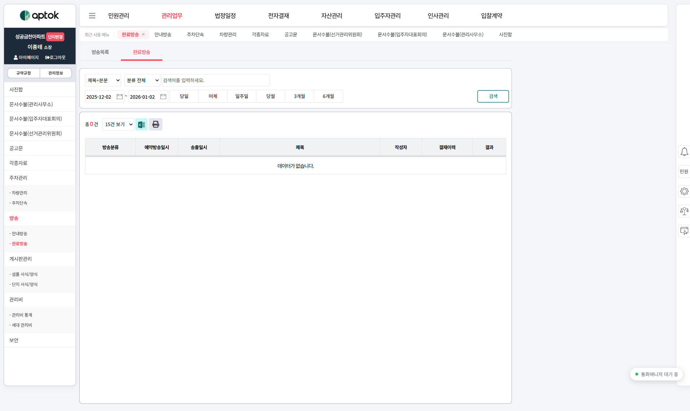
주의
- 실제로 실행되는 동작입니다. 연습 삼아 누르지 마세요.
관리업무 > 게시판관리 > 샘플 서식/양식
샘플 서식/양식
기본 제공되는 서식과 양식을 본다
따라 하기
- 1상단 관리업무를 클릭한 뒤 왼쪽 목록에서 게시판관리를 클릭하고 샘플 서식/양식를 클릭합니다.
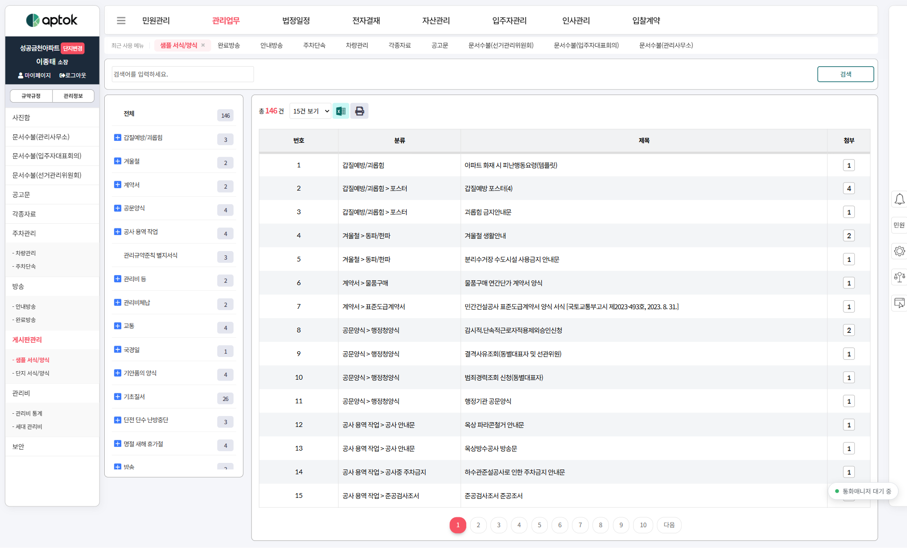
관리업무 > 게시판관리 > 단지 서식/양식
단지 서식/양식
단지에서 직접 쓰는 서식과 양식을 관리한다
따라 하기
- 1상단 관리업무를 클릭한 뒤 왼쪽 목록에서 게시판관리를 클릭하고 단지 서식/양식를 클릭합니다.
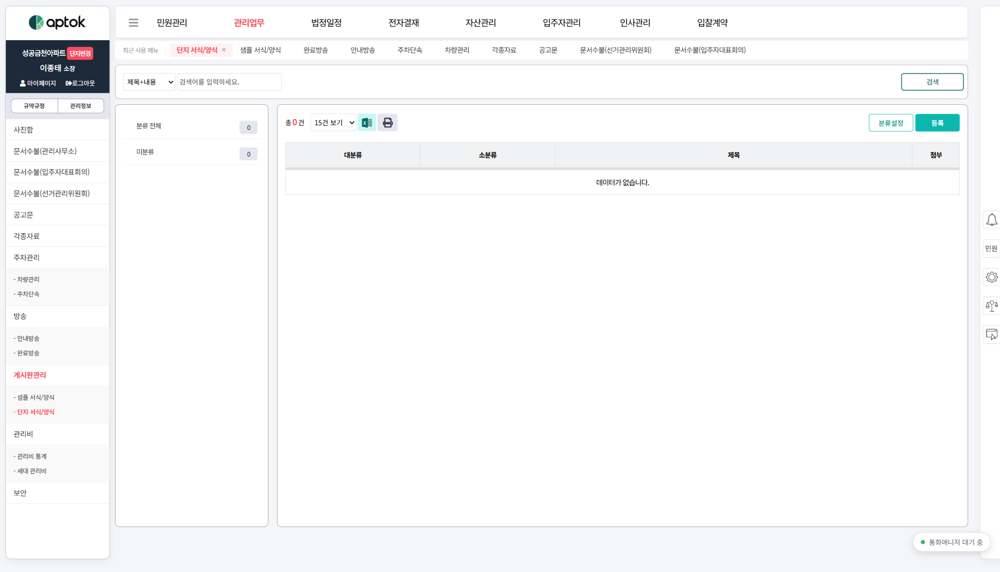
관리업무 > 관리비 > 관리비 통계
관리비 통계
관리비를 항목별·기간별로 집계해 본다
따라 하기
- 1상단 관리업무를 클릭한 뒤 왼쪽 목록에서 관리비를 클릭하고 관리비 통계를 클릭합니다.
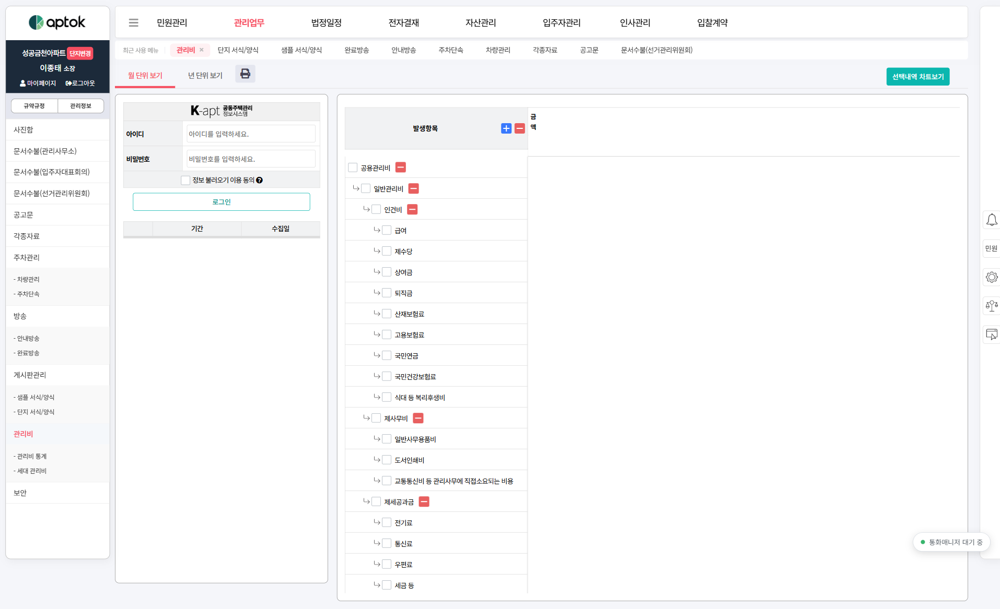
관리업무 > 관리비 > 세대 관리비
세대 관리비
세대별 관리비를 조회한다
따라 하기
- 1상단 관리업무를 클릭한 뒤 왼쪽 목록에서 관리비를 클릭하고 세대 관리비를 클릭합니다.
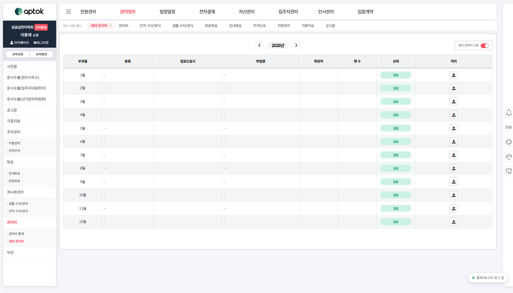
주의
- 개인정보가 표시되는 화면입니다. 열람 권한을 꼭 필요한 직원에게만 주세요.
관리업무 > 보안
보안
개인정보 관련 문서를 내려받은 계정의 기록을 조회한다
따라 하기
- 1상단 관리업무를 클릭한 뒤 왼쪽 목록에서 보안를 클릭합니다.
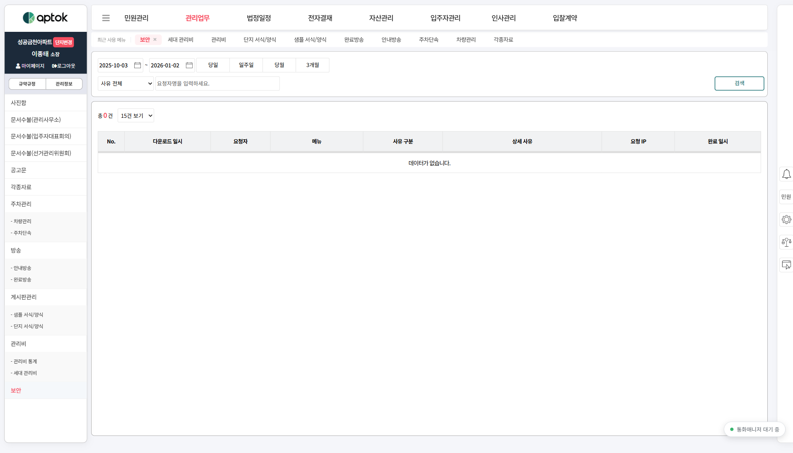
법정일정 > 월간일정
월간일정
그 달에 해야 할 법정 업무를 한눈에 본다
따라 하기
- 1상단 법정일정를 클릭한 뒤 왼쪽 목록에서 월간일정를 클릭합니다.
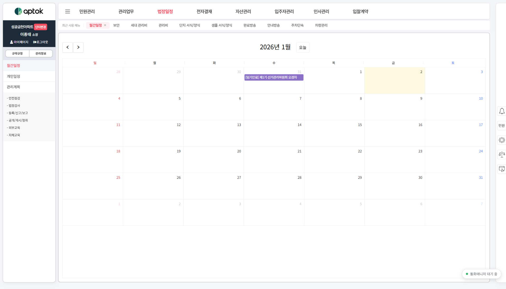
법정일정 > 개인일정
개인일정
담당자 본인의 일정을 관리한다
기본 조작은 목록 화면 공통 사용법에 정리되어 있습니다. 아래에는 이 화면에만 해당하는 내용만 적었습니다.
따라 하기
- 1상단 법정일정를 클릭한 뒤 왼쪽 목록에서 개인일정를 클릭합니다.
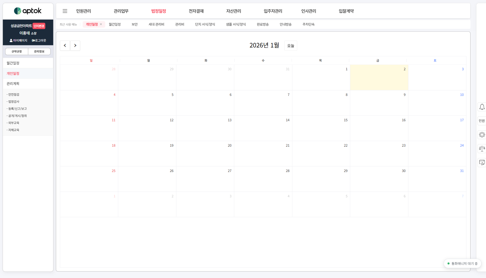
- 2검색·기간·내려받기 등 기본 조작은 목록 화면 공통 사용법을 따릅니다.
법정일정 > 관리계획 > 안전점검
안전점검
따라 하기
- 1상단 법정일정를 클릭한 뒤 왼쪽 목록에서 관리계획를 클릭하고 안전점검를 클릭합니다.
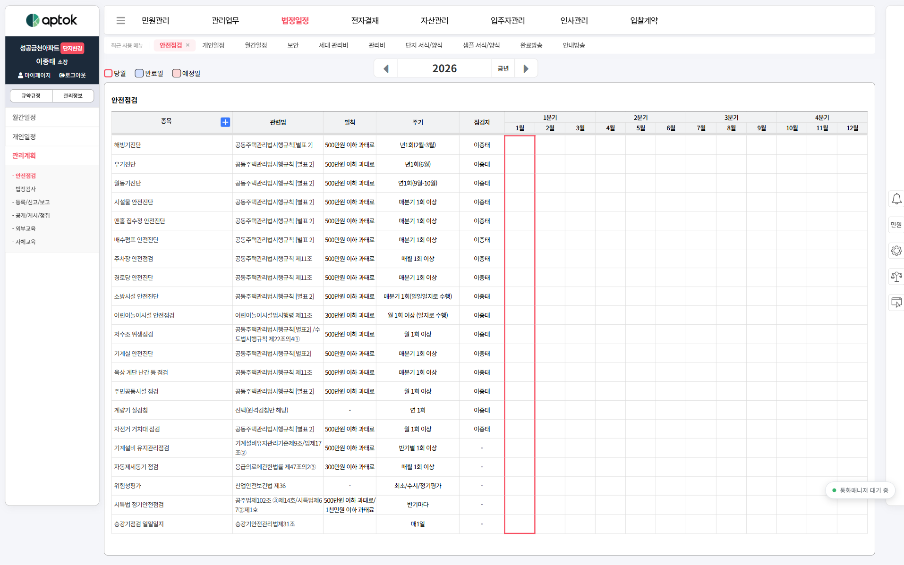
법정일정 > 관리계획 > 법정검사
법정검사
따라 하기
- 1상단 법정일정를 클릭한 뒤 왼쪽 목록에서 관리계획를 클릭하고 법정검사를 클릭합니다.
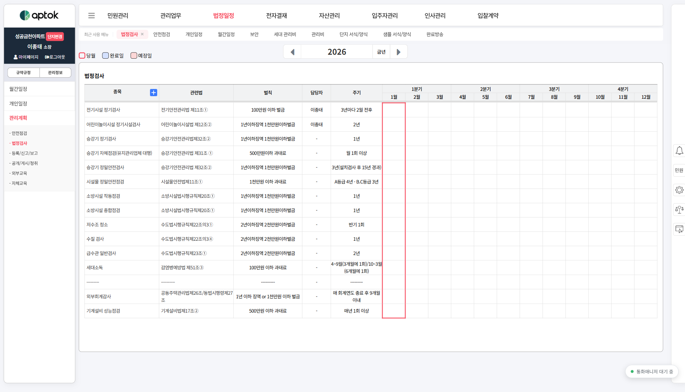
법정일정 > 관리계획 > 등록/신고/보고
등록/신고/보고
따라 하기
- 1상단 법정일정를 클릭한 뒤 왼쪽 목록에서 관리계획를 클릭하고 등록/신고/보고를 클릭합니다.
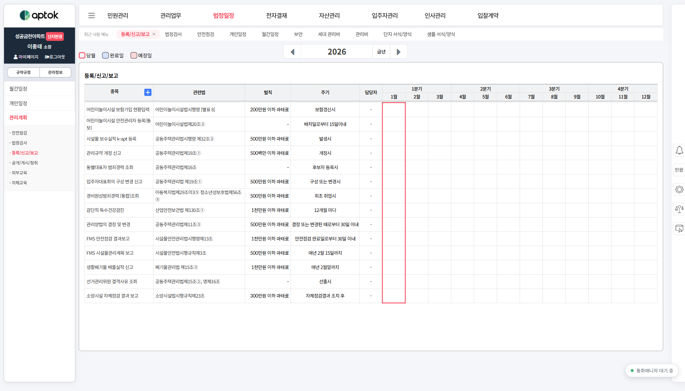
법정일정 > 관리계획 > 공개/게시/청취
공개/게시/청취
따라 하기
- 1상단 법정일정를 클릭한 뒤 왼쪽 목록에서 관리계획를 클릭하고 공개/게시/청취를 클릭합니다.
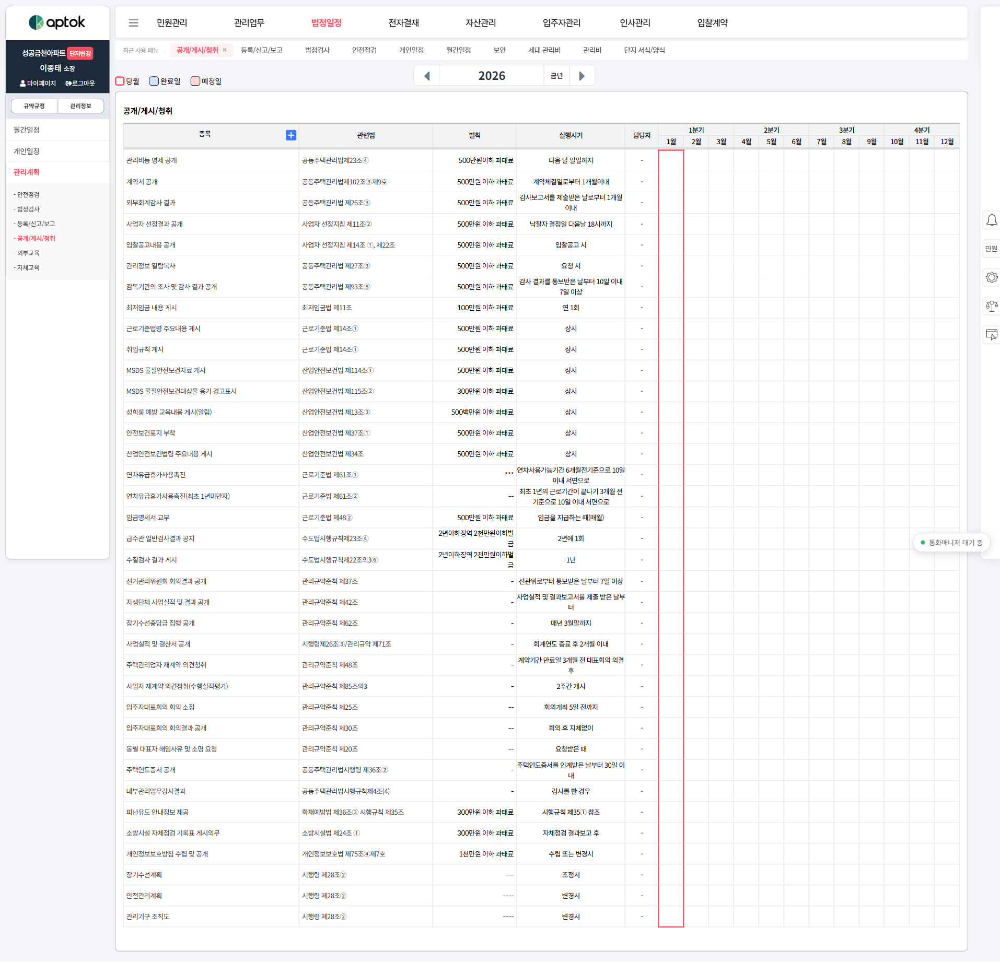
법정일정 > 관리계획 > 외부교육
외부교육
따라 하기
- 1상단 법정일정를 클릭한 뒤 왼쪽 목록에서 관리계획를 클릭하고 외부교육를 클릭합니다.
법정일정 > 관리계획 > 자체교육
자체교육
따라 하기
- 1상단 법정일정를 클릭한 뒤 왼쪽 목록에서 관리계획를 클릭하고 자체교육를 클릭합니다.
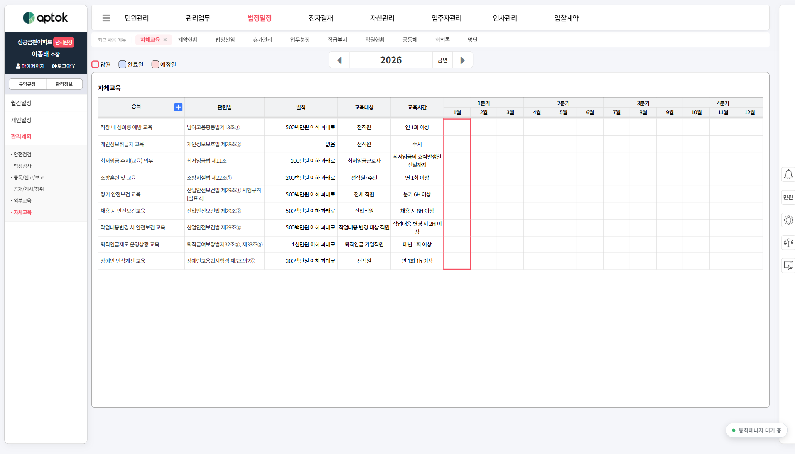
전자결재 > 기안품의
기안품의
따라 하기
- 1상단 전자결재를 클릭한 뒤 왼쪽 목록에서 기안품의를 클릭합니다.
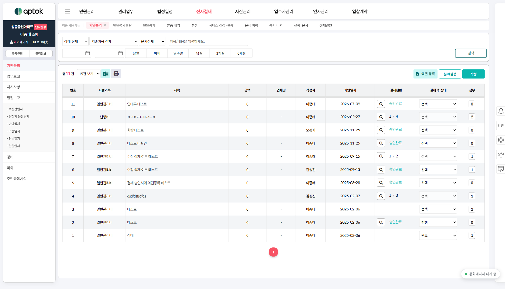
주의
- 실제로 실행되는 동작입니다. 연습 삼아 누르지 마세요.
전자결재 > 업무보고
업무보고
정기적으로 올리는 보고 문서를 관리한다
핵심
기안품의가 승인을 받는 문서라면, 업무보고는 알리는 문서다. 부과명세서나 재무제표처럼 정해진 형식으로 올리는 보고가 여기 모인다.
기안유형
기안유형이 나뉘어 있다. 업무보고 · 부과명세서 · 재무제표 · 중요업무 · 전력사용내역 · 미분류. 올릴 때 어느 유형인지 고르면 나중에 찾기 쉽다.
기본 조작은 목록 화면 공통 사용법에 정리되어 있습니다. 아래에는 이 화면에만 해당하는 내용만 적었습니다.
표에 보이는 항목
- 번호
- 기안유형
- 제목
- 금액
- 업체명
- 작성자
- 기안일시
- 결재현황
- 결재 후 상태
- 첨부
이 화면에만 있는 기능
| 기안유형 필터 | 유형별로 걸러 봅니다. 부과명세서만 모아 보는 식으로 씁니다. |
|---|---|
| 결재현황 · 결재 후 상태 | 기안품의와 같은 방식입니다. |
| 작성 | 오른쪽 위 버튼으로 새 보고를 올립니다. |
따라 하기
- 1상단 전자결재를 클릭한 뒤 왼쪽에서 업무보고를 클릭합니다.
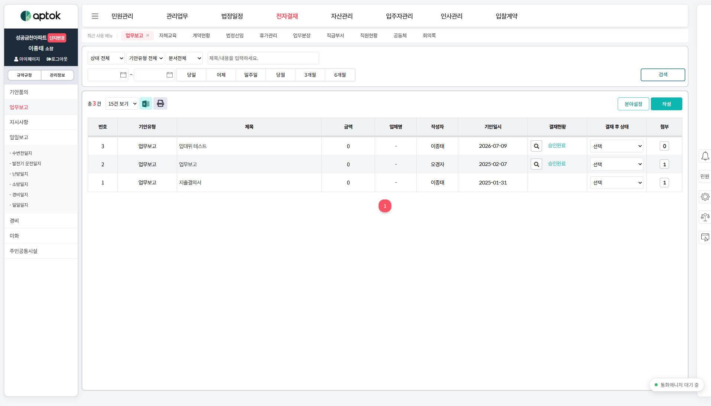
- 2기안유형이나 기간으로 찾습니다.
주의
- 기안유형을 미분류로 두면 나중에 찾기 어렵습니다. 올릴 때 맞는 유형을 고르세요.
자주 묻는 질문
기안품의와 업무보고는 뭐가 다른가요?
기안품의는 승인을 받는 문서이고, 업무보고는 알리는 문서입니다. 부과명세서나 재무제표처럼 정기적으로 올리는 것이 업무보고입니다.
전자결재 > 지시사항
지시사항
지시받은 사항을 기록하고 처리 상태를 관리한다
기본 조작은 목록 화면 공통 사용법에 정리되어 있습니다. 아래에는 이 화면에만 해당하는 내용만 적었습니다.
따라 하기
- 1상단 전자결재를 클릭한 뒤 왼쪽 목록에서 지시사항를 클릭합니다.
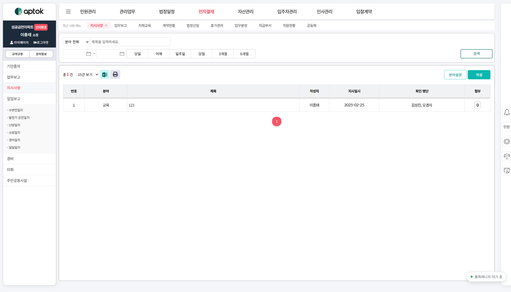
- 2검색·기간·내려받기 등 기본 조작은 목록 화면 공통 사용법을 따릅니다.
전자결재 > 일일보고 > 수변전일지
수변전일지
수변전 설비 운전 상황을 매일 기록한다
기본 조작은 일일보고 작성 공통 사용법에 정리되어 있습니다. 아래에는 이 화면에만 해당하는 내용만 적었습니다.
따라 하기
- 1상단 전자결재를 클릭한 뒤 왼쪽 목록에서 일일보고를 클릭하고 수변전일지를 클릭합니다.목록 화면입니다. 지금까지 쓴 일지가 나옵니다.
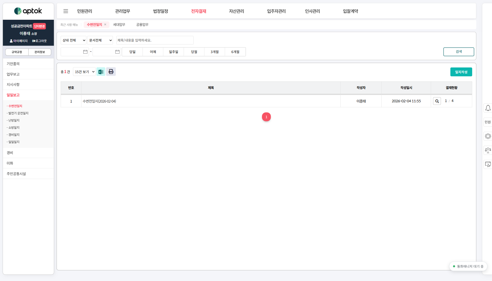
- 2새로 쓰려면 오른쪽 위 일지작성을 클릭합니다.작성 화면이 열립니다. 결재선 지정과 일지 내용 입력이 한 장에 있습니다. 선행 설정이 빠졌으면 안내창이 먼저 뜹니다.
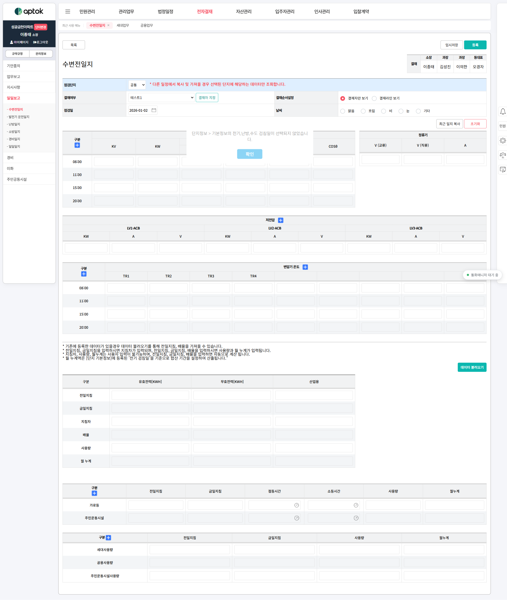
- 3이후 절차는 일일보고 작성 공통 사용법을 따릅니다.
전자결재 > 일일보고 > 발전기 운전일지
발전기 운전일지
발전기 운전 상황을 기록한다
기본 조작은 일일보고 작성 공통 사용법에 정리되어 있습니다. 아래에는 이 화면에만 해당하는 내용만 적었습니다.
따라 하기
- 1상단 전자결재를 클릭한 뒤 왼쪽 목록에서 일일보고를 클릭하고 발전기 운전일지를 클릭합니다.목록 화면입니다. 지금까지 쓴 일지가 나옵니다.
- 2새로 쓰려면 오른쪽 위 일지작성을 클릭합니다.작성 화면이 열립니다. 결재선 지정과 일지 내용 입력이 한 장에 있습니다. 선행 설정이 빠졌으면 안내창이 먼저 뜹니다.
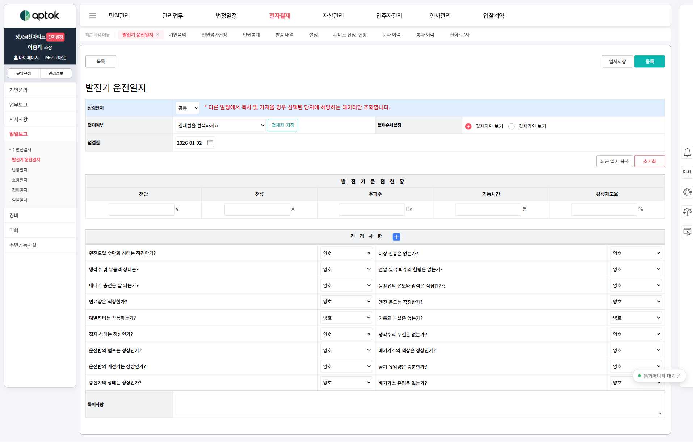
- 3이후 절차는 일일보고 작성 공통 사용법을 따릅니다.
전자결재 > 일일보고 > 난방일지
난방일지
난방 설비 운전 상황을 기록한다
기본 조작은 일일보고 작성 공통 사용법에 정리되어 있습니다. 아래에는 이 화면에만 해당하는 내용만 적었습니다.
따라 하기
- 1상단 전자결재를 클릭한 뒤 왼쪽 목록에서 일일보고를 클릭하고 난방일지를 클릭합니다.목록 화면입니다. 지금까지 쓴 일지가 나옵니다.
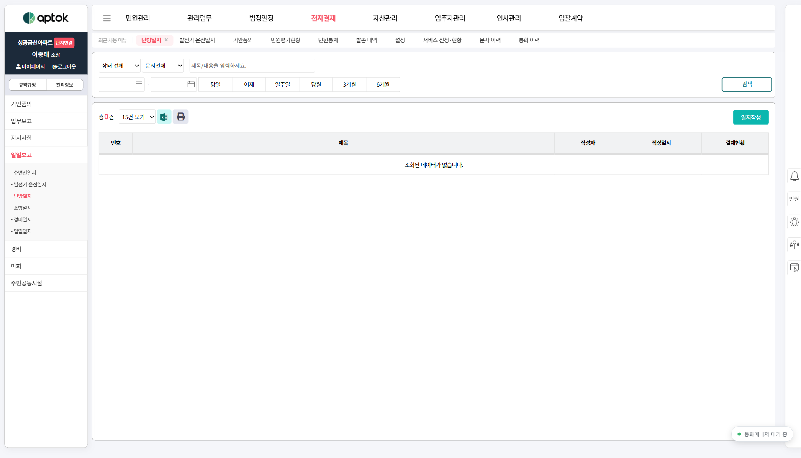
- 2새로 쓰려면 오른쪽 위 일지작성을 클릭합니다.작성 화면이 열립니다. 결재선 지정과 일지 내용 입력이 한 장에 있습니다. 선행 설정이 빠졌으면 안내창이 먼저 뜹니다.
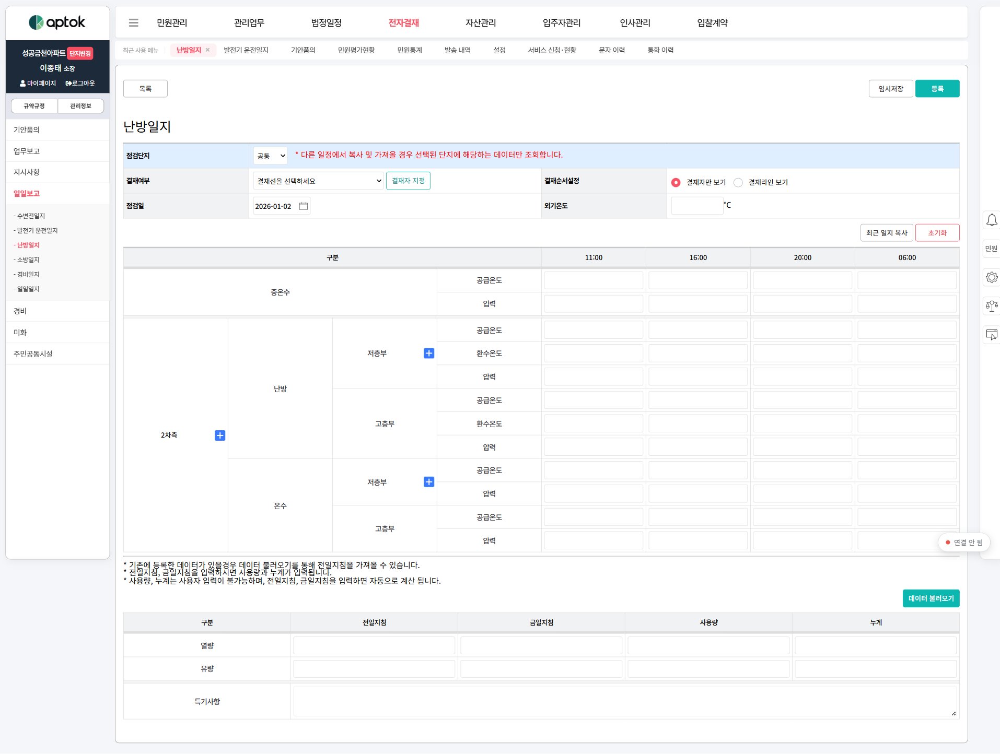
- 3이후 절차는 일일보고 작성 공통 사용법을 따릅니다.
전자결재 > 일일보고 > 소방일지
소방일지
소방 설비 점검 상황을 기록한다
기본 조작은 일일보고 작성 공통 사용법에 정리되어 있습니다. 아래에는 이 화면에만 해당하는 내용만 적었습니다.
따라 하기
- 1상단 전자결재를 클릭한 뒤 왼쪽 목록에서 일일보고를 클릭하고 소방일지를 클릭합니다.목록 화면입니다. 지금까지 쓴 일지가 나옵니다.
- 2새로 쓰려면 오른쪽 위 일지작성을 클릭합니다.작성 화면이 열립니다. 결재선 지정과 일지 내용 입력이 한 장에 있습니다. 선행 설정이 빠졌으면 안내창이 먼저 뜹니다.
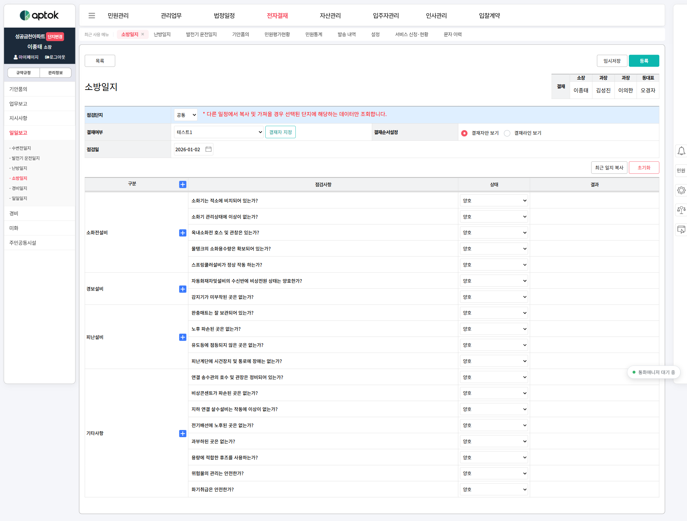
- 3이후 절차는 일일보고 작성 공통 사용법을 따릅니다.
전자결재 > 일일보고 > 경비일지
경비일지
경비 근무 상황을 기록한다
기본 조작은 일일보고 작성 공통 사용법에 정리되어 있습니다. 아래에는 이 화면에만 해당하는 내용만 적었습니다.
따라 하기
- 1상단 전자결재를 클릭한 뒤 왼쪽 목록에서 일일보고를 클릭하고 경비일지를 클릭합니다.목록 화면입니다. 지금까지 쓴 일지가 나옵니다.
- 2새로 쓰려면 오른쪽 위 일지작성을 클릭합니다.작성 화면이 열립니다. 결재선 지정과 일지 내용 입력이 한 장에 있습니다. 선행 설정이 빠졌으면 안내창이 먼저 뜹니다.
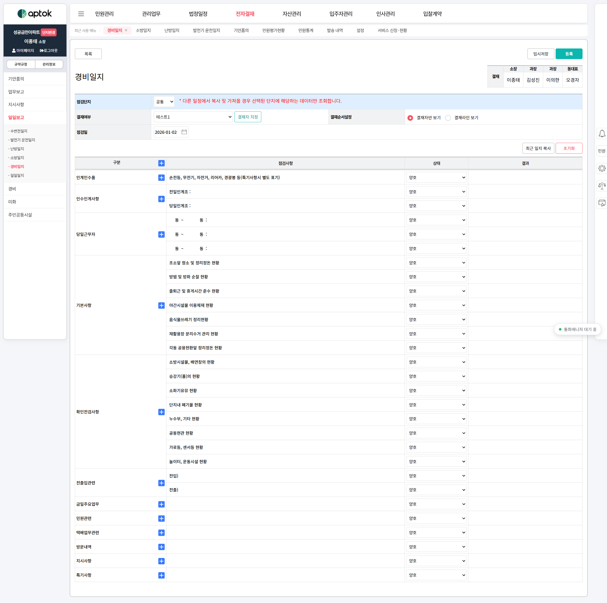
- 3이후 절차는 일일보고 작성 공통 사용법을 따릅니다.
전자결재 > 일일보고 > 일일일지
일일일지
그날 처리한 민원과 업무를 모아 하루치 보고로 올린다
핵심
다른 일지가 설비 수치를 적는 것과 달리, 일일일지는 그날의 업무를 모으는 일지다. 민원 목록에서 일일업무보고로 넘어오면 처리한 민원이 이미 표에 들어가 있다. 표 아래 편집기에 특이사항을 덧붙여 마무리한다.
더 빠른 방법
이 화면을 직접 열어 처음부터 쓰는 것보다, 민원관리에서 민원을 체크하고 일일업무보고를 누르는 편이 훨씬 빠르다. 자세한 방법은 민원을 일일일지로 바로 올리기 문서를 참고한다.
기본 조작은 일일보고 작성 공통 사용법에 정리되어 있습니다. 아래에는 이 화면에만 해당하는 내용만 적었습니다.
이 화면에만 있는 기능
| 분류 | 통합업무보고 등 일지의 성격을 고릅니다. |
|---|---|
| 공용업무 추가 / 세대민원 추가 | 표에 민원을 더 넣습니다. 민원 목록으로 되돌아가지 않아도 됩니다. |
| 선택 삭제 | 표에서 뺍니다. 민원 자체는 지워지지 않습니다. |
| 본문 편집기 | 표 아래에 그날의 특이사항이나 설명을 적습니다. |
| 사진함 · 첨부파일 | 사진과 문서를 붙입니다. 파일 하나당 100MB 이하입니다. |
따라 하기
- 1상단 전자결재를 클릭한 뒤 왼쪽 목록에서 일일보고를 클릭하고 일일일지를 클릭합니다.목록 화면입니다. 지금까지 쓴 일지가 나옵니다.
- 2새로 쓰려면 오른쪽 위 일지작성을 클릭합니다.작성 화면이 열립니다. 결재선 지정과 일지 내용 입력이 한 장에 있습니다. 선행 설정이 빠졌으면 안내창이 먼저 뜹니다.
- 3이후 절차는 일일보고 작성 공통 사용법을 따릅니다.
전자결재 > 경비
경비
경비 근무 상황을 기록해 결재를 올린다
핵심
일일보고의 일지들과 같은 구조다. 목록에서 일지작성을 눌러 작성 화면을 열고, 결재선을 정해 올린다. 자세한 방법은 일일보고 작성 공통 사용법을 참고한다.
기본 조작은 일일보고 작성 공통 사용법에 정리되어 있습니다. 아래에는 이 화면에만 해당하는 내용만 적었습니다.
표에 보이는 항목
- 번호
- 제목
- 작성자
- 작성일시
- 결재현황
이 화면에만 있는 기능
| 조회 조건 | 상태(진행중·반려·승인완료)와 문서 구분으로 걸러 봅니다. 문서 구분은 기안문서·결재대기·결재완료·감사문서·회람문서·반려문서입니다. |
|---|---|
| 일지작성 | 오른쪽 위 버튼으로 새 일지를 씁니다. |
따라 하기
- 1상단 전자결재를 클릭한 뒤 왼쪽에서 경비를 클릭합니다.목록 화면입니다.
- 2새로 쓰려면 오른쪽 위 일지작성을 클릭합니다.이후 절차는 일일보고 작성 공통 사용법을 따릅니다.
주의
- 임시저장과 등록은 다릅니다. 등록해야 결재가 올라갑니다.
전자결재 > 미화
미화
미화 작업 상황을 기록해 결재를 올린다
핵심
일일보고의 일지들과 같은 구조다. 목록에서 일지작성을 눌러 작성 화면을 열고, 결재선을 정해 올린다. 자세한 방법은 일일보고 작성 공통 사용법을 참고한다.
기본 조작은 일일보고 작성 공통 사용법에 정리되어 있습니다. 아래에는 이 화면에만 해당하는 내용만 적었습니다.
표에 보이는 항목
- 번호
- 제목
- 작성자
- 작성일시
- 결재현황
이 화면에만 있는 기능
| 조회 조건 | 상태(진행중·반려·승인완료)와 문서 구분으로 걸러 봅니다. 문서 구분은 기안문서·결재대기·결재완료·감사문서·회람문서·반려문서입니다. |
|---|---|
| 일지작성 | 오른쪽 위 버튼으로 새 일지를 씁니다. |
따라 하기
- 1상단 전자결재를 클릭한 뒤 왼쪽에서 미화를 클릭합니다.목록 화면입니다.
- 2새로 쓰려면 오른쪽 위 일지작성을 클릭합니다.이후 절차는 일일보고 작성 공통 사용법을 따릅니다.
주의
- 임시저장과 등록은 다릅니다. 등록해야 결재가 올라갑니다.
전자결재 > 주민공동시설
주민공동시설
주민공동시설 운영 상황을 기록해 결재를 올린다
핵심
일일보고의 일지들과 같은 구조다. 목록에서 일지작성을 눌러 작성 화면을 열고, 결재선을 정해 올린다. 자세한 방법은 일일보고 작성 공통 사용법을 참고한다.
기본 조작은 일일보고 작성 공통 사용법에 정리되어 있습니다. 아래에는 이 화면에만 해당하는 내용만 적었습니다.
표에 보이는 항목
- 번호
- 제목
- 작성자
- 작성일시
- 결재현황
이 화면에만 있는 기능
| 조회 조건 | 상태(진행중·반려·승인완료)와 문서 구분으로 걸러 봅니다. 문서 구분은 기안문서·결재대기·결재완료·감사문서·회람문서·반려문서입니다. |
|---|---|
| 일지작성 | 오른쪽 위 버튼으로 새 일지를 씁니다. |
따라 하기
- 1상단 전자결재를 클릭한 뒤 왼쪽에서 주민공동시설를 클릭합니다.목록 화면입니다.
- 2새로 쓰려면 오른쪽 위 일지작성을 클릭합니다.이후 절차는 일일보고 작성 공통 사용법을 따릅니다.
주의
- 임시저장과 등록은 다릅니다. 등록해야 결재가 올라갑니다.
자산관리 > 저장품(전용)
저장품(전용)
기본 조작은 목록 화면 공통 사용법에 정리되어 있습니다. 아래에는 이 화면에만 해당하는 내용만 적었습니다.
따라 하기
- 1상단 자산관리를 클릭한 뒤 왼쪽 목록에서 저장품(전용)를 클릭합니다.
- 2검색·기간·내려받기 등 기본 조작은 목록 화면 공통 사용법을 따릅니다.
자산관리 > 저장품(공용)
저장품(공용)
기본 조작은 목록 화면 공통 사용법에 정리되어 있습니다. 아래에는 이 화면에만 해당하는 내용만 적었습니다.
따라 하기
- 1상단 자산관리를 클릭한 뒤 왼쪽 목록에서 저장품(공용)를 클릭합니다.
- 2검색·기간·내려받기 등 기본 조작은 목록 화면 공통 사용법을 따릅니다.
자산관리 > 공기구
공기구
관리사무소가 보유한 공구와 기구를 관리한다
기본 조작은 목록 화면 공통 사용법에 정리되어 있습니다. 아래에는 이 화면에만 해당하는 내용만 적었습니다.
따라 하기
- 1상단 자산관리를 클릭한 뒤 왼쪽 목록에서 공기구를 클릭합니다.
- 2검색·기간·내려받기 등 기본 조작은 목록 화면 공통 사용법을 따릅니다.
자산관리 > 집기비품
집기비품
사무용 집기와 비품을 관리한다
기본 조작은 목록 화면 공통 사용법에 정리되어 있습니다. 아래에는 이 화면에만 해당하는 내용만 적었습니다.
따라 하기
- 1상단 자산관리를 클릭한 뒤 왼쪽 목록에서 집기비품를 클릭합니다.
- 2검색·기간·내려받기 등 기본 조작은 목록 화면 공통 사용법을 따릅니다.
입주자관리 > 세대관리
세대관리
세대별 입주자 정보를 관리한다
기본 조작은 목록 화면 공통 사용법에 정리되어 있습니다. 아래에는 이 화면에만 해당하는 내용만 적었습니다.
따라 하기
- 1상단 입주자관리를 클릭한 뒤 왼쪽 목록에서 세대관리를 클릭합니다.
- 2검색·기간·내려받기 등 기본 조작은 목록 화면 공통 사용법을 따릅니다.
주의
- 개인정보가 표시되는 화면입니다. 열람 권한을 꼭 필요한 직원에게만 주세요.
입주자관리 > 체납세대
체납세대
관리비를 내지 않은 세대를 조회한다
따라 하기
- 1상단 입주자관리를 클릭한 뒤 왼쪽 목록에서 체납세대를 클릭합니다.
주의
- 개인정보가 표시되는 화면입니다. 열람 권한을 꼭 필요한 직원에게만 주세요.
입주자관리 > 입주자대표회의 > 명단
입주자대표회의 명단
입주자대표회의 구성원 명단을 관리한다
따라 하기
- 1상단 입주자관리를 클릭한 뒤 왼쪽 목록에서 입주자대표회의를 클릭하고 명단를 클릭합니다.
주의
- 개인정보가 표시되는 화면입니다. 열람 권한을 꼭 필요한 직원에게만 주세요.
입주자관리 > 입주자대표회의 > 회의록
입주자대표회의 회의록
회의록을 작성하고 보관한다
기본 조작은 목록 화면 공통 사용법에 정리되어 있습니다. 아래에는 이 화면에만 해당하는 내용만 적었습니다.
따라 하기
- 1상단 입주자관리를 클릭한 뒤 왼쪽 목록에서 입주자대표회의를 클릭하고 회의록를 클릭합니다.
- 2검색·기간·내려받기 등 기본 조작은 목록 화면 공통 사용법을 따릅니다.
입주자관리 > 선거관리위원회 > 명단
선거관리위원회 명단
선거관리위원회 구성원 명단을 관리한다
따라 하기
- 1상단 입주자관리를 클릭한 뒤 왼쪽 목록에서 선거관리위원회를 클릭하고 명단를 클릭합니다.
주의
- 개인정보가 표시되는 화면입니다. 열람 권한을 꼭 필요한 직원에게만 주세요.
입주자관리 > 선거관리위원회 > 회의록
선거관리위원회 회의록
회의록을 작성하고 보관한다
기본 조작은 목록 화면 공통 사용법에 정리되어 있습니다. 아래에는 이 화면에만 해당하는 내용만 적었습니다.
따라 하기
- 1상단 입주자관리를 클릭한 뒤 왼쪽 목록에서 선거관리위원회를 클릭하고 회의록를 클릭합니다.
- 2검색·기간·내려받기 등 기본 조작은 목록 화면 공통 사용법을 따릅니다.
입주자관리 > 공동체
공동체
기본 조작은 목록 화면 공통 사용법에 정리되어 있습니다. 아래에는 이 화면에만 해당하는 내용만 적었습니다.
따라 하기
- 1상단 입주자관리를 클릭한 뒤 왼쪽 목록에서 공동체를 클릭합니다.
- 2검색·기간·내려받기 등 기본 조작은 목록 화면 공통 사용법을 따릅니다.
인사관리 > 권한관리 > 권한별 설정 탭
권한관리 — 권한별 설정
직급 단위로 볼 수 있는 메뉴와 할 수 있는 일을 한 번에 정한다. 직원이 한 명씩 늘어날 때마다 설정하지 않아도 되도록, 직급에 미리 권한을 걸어두는 화면이다.
먼저 읽어야 하는 이유
권한 설정에 따라 직원마다 보이는 메뉴가 달라진다. "그 버튼이 저한테는 안 보여요" 문의의 대부분이 여기서 결정되므로, 다른 화면 매뉴얼을 읽기 전에 이 화면을 먼저 이해해야 한다.
먼저 읽어야 하는 이유
권한 설정에 따라 직원마다 보이는 메뉴가 달라진다. "그 버튼이 저한테는 안 보여요" 문의의 대부분이 여기서 결정되므로, 다른 화면 매뉴얼을 읽기 전에 이 화면을 먼저 이해해야 한다.
먼저 할 일
인사관리 > 직원현황
직원이 어느 권한 그룹(직책)에 속하는지는 이 화면이 아니라 직원현황에서 지정한다. 따라서 순서는 ①직원현황에서 직원을 그룹에 배정 → ②권한관리에서 그룹에 권한 부여 이다. 매뉴얼에서도 직원현황 문서를 먼저 읽도록 안내한다.
용어
| 권한 그룹 | 직급별로 묶어둔 권한 묶음. 기본으로 관리사무회계직급 / 과장급 / 주임대리급 / 일반직원급이 있다. |
|---|---|
| 등록 | 새 항목을 만들 수 있는 권한 |
| 열람 | 화면을 열어 내용을 볼 수 있는 권한 |
| 관리 | 설정 변경·삭제 등 관리자 동작 권한 |
| 전체 | 등록·열람·관리를 한 번에 켜고 끄는 칸 |
따라 하기
- 1상단 메뉴에서 인사관리를 클릭한 뒤 왼쪽 목록에서 권한관리를 클릭합니다.
- 2화면 위쪽 권한별 설정 탭이 선택되어 있는지 확인합니다.처음 들어오면 이 탭이 기본으로 열립니다.
- 3왼쪽 권한목록에서 설정할 직책을 클릭합니다.선택 전에는 오른쪽에 "좌측 해당 직책/직원을 선택해 주세요"라는 안내만 보입니다. 직책을 클릭하면 그때 권한설정 표가 나타나고, 선택한 항목은 테두리가 진하게 표시됩니다.
- 4오른쪽 권한설정 표에서 메뉴별로 등록 열람 관리 칸을 체크합니다.메뉴 이름 왼쪽 +를 누르면 하위 메뉴가 펼쳐져 더 세밀하게 지정할 수 있습니다.
- 5메뉴 하나를 통째로 열어주려면 그 줄의 전체를 체크합니다.표 맨 위 모든 권한을 체크하면 모든 메뉴가 한 번에 켜집니다.
- 6오른쪽 위 저장을 클릭합니다.저장을 누르기 전까지는 체크만 바뀐 상태이며 실제로 적용되지 않습니다.
새 권한 그룹 만들기
- 1왼쪽 권한목록 오른쪽 위 권한 추가를 클릭합니다.
주의
- 저장을 누르지 않고 다른 탭이나 메뉴로 이동하면 체크한 내용이 사라집니다.
- 권한을 껐다가 켜는 순간 해당 직급 직원들의 화면에서 메뉴가 사라지거나 나타납니다. 업무 시간 중 변경은 피하는 편이 좋습니다.
- 입주자관리(세대관리·체납세대)와 인사관리(직원현황)는 개인정보를 다루는 화면입니다. 꼭 필요한 직급에만 열어주세요.
- 초기화는 설정을 되돌립니다.
자주 묻는 질문
직원이 메뉴가 안 보인다고 합니다.
먼저 그 직원의 직급을 확인하고, 이 화면에서 해당 직급에 그 메뉴의 열람이 켜져 있는지 확인합니다. 직급 설정이 맞는데도 안 보이면 개별 설정 탭에서 그 직원만 따로 막혀 있는지 확인합니다.
등록은 되는데 수정이 안 됩니다.
해당 메뉴의 관리 권한이 꺼져 있는지 확인합니다.
새로 들어온 직원을 과장급 권한으로 넣으려면?
이 화면이 아니라 인사관리 > 직원현황에서 그 직원의 직책을 과장급으로 지정합니다.
인사관리 > 권한관리 > 개별 설정 탭
권한관리 — 개별 설정
특정 직원 한 명에게만 다른 권한을 주거나 뺀다. 같은 직급이라도 담당 업무가 다를 때 사용한다.
핵심
직원의 권한은 그룹권한과 개인권한 중 하나로만 동작한다. 그룹권한 상태인 직원을 이 화면에서 선택하면 "그룹권한으로 설정되어 있습니다"라는 안내창이 뜨고 설정이 막힌다. 개인별로 다르게 주려면 먼저 인사관리 > 직원현황에서 그 직원을 개인권한으로 바꿔야 한다.
먼저 할 일
인사관리 > 직원현황
대상 직원을 개인권한으로 변경해 둔다. 그룹권한 상태에서는 이 화면의 권한설정 표가 잠긴다.
따라 하기
- 1권한관리 화면에서 개별 설정 탭을 클릭합니다.
- 2왼쪽 직원목록에서 대상 직원을 찾습니다. 이름을 입력하고 검색을 눌러도 됩니다.이름 옆에 현재 직급이, 오른쪽에 연락처 뒷자리가 표시됩니다.
- 3직원 이름을 클릭해 선택합니다.선택한 직원만 진하게 표시되고 나머지는 흐려집니다.
- 4오른쪽 권한설정 표에서 이 직원에게 줄 권한을 체크합니다.표 구성은 권한별 설정 탭과 같습니다.
- 5오른쪽 위 저장을 클릭합니다.
주의
- 직원목록에 표시되는 직급(과장·소장·미설정)은 명목상 직책 표시일 뿐 권한과는 무관합니다. 미설정은 직책을 아직 정하지 않았다는 뜻이며, 권한이 없다는 뜻이 아닙니다.
- 그룹권한과 개인권한은 동시에 적용되지 않습니다. 한 직원은 둘 중 하나로만 동작합니다.
- 직원이 퇴사하면 권한부터 회수해야 합니다. 특히 개인정보 관련 메뉴.
자주 묻는 질문
같은 과장인데 한 명만 전자결재를 쓰게 하려면?
이 탭에서 그 직원을 선택하고 전자결재 권한만 켜준 뒤 저장합니다.
개별로 준 권한을 없애려면?
같은 방법으로 체크를 풀고 저장합니다.
직원을 클릭했더니 그룹권한으로 설정되어 있다는 창이 뜹니다.
그 직원은 현재 그룹권한을 쓰고 있어 개별 설정이 잠긴 상태입니다. 인사관리 > 직원현황에서 개인권한으로 바꾼 뒤 다시 시도하세요.
직급이 미설정인 직원인데 권한을 줘도 되나요?
됩니다. 직급 표시와 권한은 별개로 동작합니다.
개인정보
이 화면에는 직원 이름과 연락처가 표시됩니다. 연락처는 가운데 자리가 가려진 상태로 보입니다. 화면을 다른 곳에 공유하거나 출력할 때는 이름이 노출되지 않도록 주의하세요.
인사관리 > 직원현황
직원현황
직원을 등록하고 직책과 권한 방식을 지정한다
기본 조작은 목록 화면 공통 사용법에 정리되어 있습니다. 아래에는 이 화면에만 해당하는 내용만 적었습니다.
따라 하기
- 1상단 인사관리를 클릭한 뒤 왼쪽 목록에서 직원현황를 클릭합니다.
- 2검색·기간·내려받기 등 기본 조작은 목록 화면 공통 사용법을 따릅니다.
주의
- 개인정보가 표시되는 화면입니다. 열람 권한을 꼭 필요한 직원에게만 주세요.
인사관리 > 직급부서
직급부서
단지에서 쓰는 직급과 부서를 정한다
따라 하기
- 1상단 인사관리를 클릭한 뒤 왼쪽 목록에서 직급부서를 클릭합니다.
인사관리 > 업무분장
업무분장
따라 하기
- 1상단 인사관리를 클릭한 뒤 왼쪽 목록에서 업무분장를 클릭합니다.
인사관리 > 휴가관리
휴가관리
직원 휴가를 신청하고 관리한다
기본 조작은 목록 화면 공통 사용법에 정리되어 있습니다. 아래에는 이 화면에만 해당하는 내용만 적었습니다.
따라 하기
- 1상단 인사관리를 클릭한 뒤 왼쪽 목록에서 휴가관리를 클릭합니다.
- 2검색·기간·내려받기 등 기본 조작은 목록 화면 공통 사용법을 따릅니다.
주의
- 개인정보가 표시되는 화면입니다. 열람 권한을 꼭 필요한 직원에게만 주세요.
인사관리 > 외부교육
외부교육
직원이 받은 외부 교육 이력을 기록한다
같은 화면 안내
이 화면은 [법정일정 > 관리계획 > 외부교육]와 같은 화면이다. 어느 쪽으로 들어가도 같은 자료가 나온다. 두 번 입력할 필요가 없다.
기본 조작은 목록 화면 공통 사용법에 정리되어 있습니다. 아래에는 이 화면에만 해당하는 내용만 적었습니다.
따라 하기
- 1상단 인사관리를 클릭한 뒤 왼쪽 목록에서 외부교육를 클릭합니다.
- 2검색·기간·내려받기 등 기본 조작은 목록 화면 공통 사용법을 따릅니다.
인사관리 > 자체교육
자체교육
단지 자체 교육 실시 내역을 기록한다
같은 화면 안내
이 화면은 [법정일정 > 관리계획 > 자체교육]와 같은 화면이다. 어느 쪽으로 들어가도 같은 자료가 나온다. 두 번 입력할 필요가 없다.
기본 조작은 목록 화면 공통 사용법에 정리되어 있습니다. 아래에는 이 화면에만 해당하는 내용만 적었습니다.
따라 하기
- 1상단 인사관리를 클릭한 뒤 왼쪽 목록에서 자체교육를 클릭합니다.
- 2검색·기간·내려받기 등 기본 조작은 목록 화면 공통 사용법을 따릅니다.
인사관리 > 법정선임
법정선임
따라 하기
- 1상단 인사관리를 클릭한 뒤 왼쪽 목록에서 법정선임를 클릭합니다.
입찰계약 > 계약현황
계약현황
단지가 맺은 계약을 관리한다
기본 조작은 목록 화면 공통 사용법에 정리되어 있습니다. 아래에는 이 화면에만 해당하는 내용만 적었습니다.
따라 하기
- 1상단 입찰계약를 클릭한 뒤 왼쪽 목록에서 계약현황를 클릭합니다.
- 2검색·기간·내려받기 등 기본 조작은 목록 화면 공통 사용법을 따릅니다.